AI Influencers
70 prompts with preview images. Tap an image to enlarge, “Copy prompt” to grab the text.
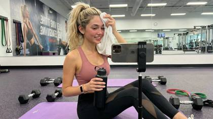
{
"subject": {
"description": "A young woman sitting on yoga mat, wiping sweat with towel, holding water bottle",
"mirror_rules": "N/A - direct gym photo",
"age": "late 20s",
"expression": "accomplished, slight breathlessness, confident smile",
"hair": {
"color": "blonde with highlights",
"style": "high ponytail, slightly messy with flyaways from workout"
},
"clothing": {
"top": {
"type": "sports bra",
"color": "dusty rose pink",
"details": "medium support, strappy back detail, moisture visible from sweat"
},
"bottom": {
"type": "high-waisted leggings",
"color": "black with mesh panels",
"details": "ankle length, mesh cutouts on calves, compression fit"
}
},
"face": {
"preserve_original": true,
"makeup": "minimal, dewy from workout, natural flushed cheeks, no eye makeup"
}
},
"accessories": {
"headwear": {
"type": "none",
"details": "hair pulled back in scrunchie"
},
"jewelry": {
"earrings": "small diamond studs",
"necklace": "none",
"wrist": "rose gold fitness tracker, black hair ties on wrist",
"rings": "none"
},
"device": {
"type": "smartphone",
"details": "propped against dumbbell, recording workout selfie"
},
"prop": {
"type": "insulated water bottle",
"details": "matte black 32oz bottle with motivational quote sticker, condensation visible"
}
},
"photography": {
"camera_style": "gym selfie aesthetic, smartphone front camera",
"angle": "slightly above eye level, sitting position",
"shot_type": "full upper body and crossed legs, centered composition",
"aspect_ratio": "9:16 vertical",
"texture": "crisp detail, bright gym lighting, energetic feel"
},
"background": {
"setting": "modern gym studio",
"wall_color": "light gray with motivational mural",
"elements": [
"purple yoga mat laid out",
"set of dumbbells scattered nearby",
"white towel draped over shoulder",
"blurred gym equipment in background",
"large mirror reflecting back wall",
"resistance bands coiled on floor"
],
"atmosphere": "energetic, accomplished, health-focused",
"lighting": "bright overhead LED gym lighting, even coverage"
}
} @eva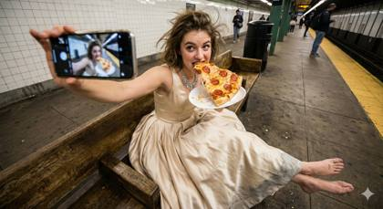
{
"subject": {
"description": "Young woman in a ballgown sitting on a subway platform bench eating a greasy slice of pizza, looking directly at camera (selfie arm extended)",
"mirror_rules": "front-facing camera (no mirror), high angle looking down at herself",
"age": "early 20s",
"expression": {
"eyes": "looking up at lens, playful/defiant",
"mouth": "taking a bite of pizza, cheese string visible",
"overall": "unbothered, hungry, breaking character"
},
"hair": {
"style": "messy, windblown from the train arrival",
"texture": "slightly frizzy/humid texture"
},
"body": {
"pose": "sitting with legs sprawled open casually (manspreading) in a dress",
"feet": "bare feet resting on the dirty concrete platform"
},
"clothing": {
"gown": {
"type": "voluminous champagne silk ballgown",
"fit": "corset top pushing up chest, skirt pooled around her like a cloud",
"material": "smooth satin/silk, wrinkles visible where she is sitting",
"dirt": "visible gray smudges on the hem where it touches the ground"
}
}
},
"accessories": {
"food": {
"item": "NYC dollar slice pizza on a paper plate",
"detail": "grease stain on the paper plate, pepperoni curving up",
"physics": "cheese stretching slightly"
},
"jewelry": "massive diamond necklace reflecting the platform lights"
},
"photography": {
"camera_style": "casual wide angle (0.5x) selfie",
"quality": "high contrast, sharp center, distorted edges",
"lighting": "harsh, yellow-tinted platform lighting",
"angle": "high angle, capturing the cleavage, the pizza, and the bare feet in one frame"
},
"background": {
"setting": "Subway Platform (14th St station vibes)",
"elements": [
"white subway tile walls with grime in grout [cite: 71]",
"trash can overflowing in background",
"yellow safety strip on platform edge",
"rat (optional blur in corner)"
],
"atmosphere": "smells like stale air, visual noise",
"vibe_contrast": "gourmet aesthetic vs. street food reality"
},
"vibe": {
"energy": "post-gala hunger",
"contrast": "silk + concrete + grease",
"mood": "authentic, chaotic, relatable",
"caption_energy": "dinner served 🍕"
}
}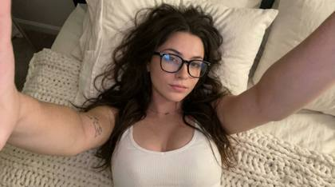
{
"subject": {
"gender": "Female",
"age_appearance": "Young adult",
"hair": "Long, dark brown, tousled and loose, spread out on the bedding",
"facial_features": "Light skin tone, soft natural makeup, neutral expression",
"body_details": "Small line-art tattoo on inner left bicep"
},
"apparel": {
"top": "White ribbed tank top/bodysuit with a scoop neckline",
"style": "Casual loungewear"
},
"accessories": {
"eyewear": "Thick black-rimmed glasses (rectangular frames) with slight lens reflection",
"jewelry": [
"Small stud nose piercing on left nostril",
"Delicate pendant necklace"
]
},
"environment": {
"setting": "Bed/Bedroom",
"textures": "Large chunky knit white blanket with thick woven loops",
"background": "Soft white pillows and bedding"
},
"lighting_and_atmosphere": {
"lighting": "Soft, warm indoor lighting, slightly dim with gentle shadows",
"mood": "Cozy, intimate, candid, relaxed"
},
"camera_perspective": {
"angle": "High-angle selfie (POV)",
"framing": "Close-up, arm extended towards camera",
"style": "Smartphone aesthetic, natural unposed look"
}
}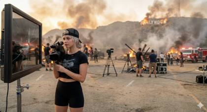
{
"subject": {
"description": "Young woman captured on the set of a dystopian movie scene, innocent doe eyes contrasted against a collapsing world",
"framing_rules": "facing a large cracked on-set mirror or reflective monitor, hips slightly angled, close framing filling most of the frame",
"age": "early 20s",
"expression": {
"eyes": "big innocent doe eyes looking up through lashes, calm curiosity amid chaos",
"mouth": "soft neutral pout, lips slightly parted",
"brows": "soft, slightly raised, unreadable",
"overall": "angelic calm against apocalyptic surroundings"
},
"hair": {
"color": "platinum blonde",
"style": "messy bun partially coming loose, flyaways catching ash and embers"
},
"body": {
"waist": "tiny",
"ass": "round, full, black shorts clinging naturally with movement",
"thighs": "thick, grounded, fabric stretched realistically"
},
"clothing": {
"top": {
"type": "ULTRA mini crop tee",
"color": "washed black",
"graphic": "distressed professional VIDEO CAMERA graphic, partially cracked and faded",
"fit": "tight, cropped high, stretched fabric exposing midriff"
},
"bottom": {
"type": "tight athletic booty shorts",
"color": "black",
"material": "thin matte athletic fabric",
"fit": "vacuum tight, riding up naturally, realistic tension folds"
}
},
"face": {
"features": "pretty – big eyes, small nose, full lips",
"makeup": "minimal, natural, slightly smudged from heat and ash"
}
},
"accessories": {
"headwear": {
"type": "Goorin Bros cap",
"details": "black, worn backwards, lightly dusted with ash"
},
"headphones": {
"type": "over-ear studio headphones",
"position": "around neck, cable hanging loose"
},
"device": {
"type": "professional video camera",
"details": "cinema-style camera with metal body and matte box, held firmly at chest level"
}
},
"photography": {
"camera_style": "on-set dystopian behind-the-scenes capture",
"quality": "raw production still realism, imperfect exposure",
"angle": "eye-level, direct reflection",
"shot_type": "3/4 body, intimate proximity",
"aspect_ratio": "9:16 vertical",
"texture": "visible grain, smoke diffusion, slight motion blur from heat shimmer"
},
"background": {
"setting": "dystopian Hollywood movie set",
"style": "post-collapse cinematic environment",
"elements": [
"Hollywood Sign visible in distance",
"large flames engulfing the letters",
"thick smoke plumes rising into the sky",
"burning debris and scorched hills",
"emergency lights and practical fire effects",
"film crew silhouettes partially obscured by smoke"
],
"atmosphere": "apocalyptic, tense, heat-filled air",
"lighting": "firelight as dominant source, orange glow mixed with harsh practical set lights"
},
"vibe": {
"energy": "calm presence in the middle of destruction",
"mood": "between takes during the end of the world",
"contrast": "soft innocence framed by burning civilization",
"caption_energy": "'last take before the fall 🔥'"
}
}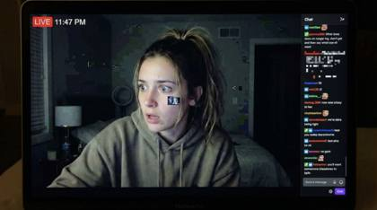
A raw, screen-captured livestream still of a 24-year-old female influencer sitting on her unmade bed at night, frozen mid-reaction as something shocking happens off-camera. Her eyes are widened instinctively, mouth slightly open, expression unperformed. Heavy H.264 livestream compression, macro-blocking in shadow areas, banding in the dark walls. Ring light slightly off-axis causing uneven facial falloff, skin texture intact with visible pores, faint under-eye creasing. Phone camera glare reflects in her pupils. Pixel noise crawling in the shadows. Looks accidentally captured, not posed.
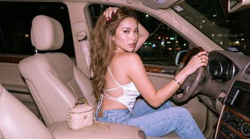
{ "project_constraints": { "facial_rendering": "100% original facial features (Do not edit the face)", "resolution": "1200x1200px", "output_quality": "Photo-realistic, 8K resolution" }, "camera_and_style": { "device_emulation": "Y2k-era digital camera (Canon IXUS / Sony Cyber-shot)", "perspective": "Low-angle, shot from behind at a 3/4 angle", "visual_aesthetic": "Cinematic, nostalgic", "post_processing": { "grain": "Thin film grain", "depth_of_field": "Shallow", "color_grading": "Bright overall tone with a slight pinkish-purple hue" } }, "subject_details": { "demographics": "Beautiful young woman", "physique": "Hourglass figure, fair dewy skin", "hair": "Long, wavy, thick milk-brown hair, spiral curls reaching waist", "makeup": { "base": "Light brown nude", "eyes": "Aussie eyeliner", "finish": "Glossy cheek and lip color" }, "nails": "Long, polished in shiny wine red" }, "pose_and_action": { "position": "Sitting sideways in passenger seat", "hands": "Right hand gripping steering wheel, left hand lifting hair up", "expression": "Looking back over shoulder, seductive and confident" }, "fashion_and_accessories": { "top": "Shiny white tube top with open back and delicate crisscross detail", "bottom": "Light blue high-waisted jeans (fitted)", "jewelry": "Several gold rings, matching bracelet", "bag": "Small Chanel Vanity bag with black gold chain (on armrest)" }, "environment": { "location": "Interior of luxury SUV (Mercedes-Benz style)", "interior_elements": "Wooden trim, light beige leather seats", "time_of_day": "Night" }, "lighting": { "technique": "Direct flash photography", "sources": [ "Soft warm interior lighting", "Cool blue dashboard light", "City light bokeh through windows" ], "characteristics": "High contrast, pronounced flash shadows, realistic cinematic lighting" }}@cherryglow{
"subject": "Young female model with fair skin, sultry and captivating expression, head tilted slightly back, lips slightly parted.",
"clothing": "White textured lingerie or camisole top with thin, intricate spaghetti straps.",
"hair": "Platinum blonde to white hair, soft loose waves, mid-length, backlit by the studio lights highlighting individual strands.",
"face": "Flawless skin texture, contoured cheekbones, glossy nude-pink lips, defined nose, soft gaze, dramatic eye makeup visible through glasses.",
"accessories": "Oversized clear pink acetate eyeglasses that catch the light, small gold hoop earrings, layered gold chain necklaces, crystal-embellished headband visible on the side.",
"environment": "Studio setting with a smooth, solid background transitioning between deep blue and violet gradients.",
"lighting": "Cinematic split lighting (gel lighting); intense neon pink/magenta light source from the left, cool neon cyan/blue light source from the right, creating a dual-tone effect on the skin and hair, strong rim lighting.",
"camera": "Portrait orientation, medium close-up shot, eye-level angle.",
"lenses": "85mm portrait lens, aperture f/1.8 for shallow depth of field, sharp focus on the eyes and glasses frames, soft bokeh on the background hair.",
"meta_tokens_for_photorealism": "8k resolution, RAW photo, hyper-realistic, highly detailed texture, pore-level detail, ray tracing, sharp focus, masterpiece, professional photography.",
"style": "Synthwave, cyberpunk aesthetic, neon-noir, high-fashion editorial, retro-futuristic, vaporwave, glossy magazine style."
}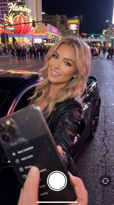
{
"meta_data":{"style":"iPhone Pro Max Photography","aspect_ratio":"9:16"},
"prompt_components":{
"subject":"Beautiful 24-year-old Instagram model, fair skin, natural glam makeup, long styled hair, taking a mirror-style selfie with her iPhone while leaning against a new McLaren. Confident nightlife expression, authentic hand-held framing, realistic skin texture.",
"environment":"Las Vegas Strip at night with neon lights, glowing signage, traffic reflections, crowds blurred by depth, polished McLaren paint reflecting city lights, asphalt shine and ambient nightlife atmosphere.",
"lighting":"Smart HDR night lighting, mixed neon colors, subtle specular highlights on skin and car, faint shadow falloff, balanced exposure for bright signs vs darker street areas.",
"camera_gear":"iPhone 17 Pro Max Main Camera 24mm f/1.78, handheld selfie angle, computational night-mode optimization.",
"processing":"Apple ProRAW, Deep Fusion sharpness, Smart HDR dynamic range, natural mobile-tone rendering.",
"imperfections":"Light digital noise, slight highlight clipping from neon signs, minor motion softness, lens-edge falloff, realistic reflections on car and phone screen."
},
"full_prompt_string":"Ultra-realistic iPhone 17 Pro Max 24mm night selfie of a beautiful 24-year-old Instagram model leaning against a new McLaren on the Las Vegas Strip. Smart HDR lighting, neon reflections, Deep Fusion detail, Apple ProRAW color, authentic handheld framing, natural skin texture, slight digital noise, mild clipping from bright signs, real car reflections.",
"negative_prompt":"DSLR, cinema lens, anamorphic, film grain, heavy bokeh, studio lighting, perfect skin blur, unrealistic colors"
}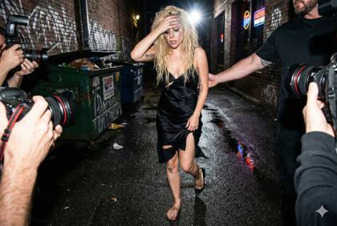
{
"meta_data": {
"style": "Raw Paparazzi/Press Photography",
"aspect_ratio": "3:2 (standard full frame)"
},
"prompt_components": {
"subject_analysis": "Dishevelled pop star, recognizable but messy, tangled bleached hair, streaked mascara running down cheeks. Wearing a ripped silk party dress, clutching a grimy metal railing. One bare, dirty foot on wet asphalt, the other in a broken heel. A hand with chipped nail polish thrust directly toward the camera lens to shield face from intense light.",
"the_chaos_factor": "Grimy back alley behind a dive bar at 3:00 AM. Wet pavement reflecting sickly neon beer signs and red taillights. Overflowing dumpsters, graffiti-covered brick walls. A dense scrum of other photographers' arms, lenses, and flash units pushing into the frame, jostling the subject. A burly security guard's arm trying to push the camera back.",
"lighting_tech": "Brutal, direct on-camera strobe firing at full power. Flash burn on the subject's blocking hand and forehead. Mixed color temperatures: cool white flash clashes with warm, sickly tungsten streetlights and neon background signage.",
"camera_gear": "Nikon D6 DSLR coupled with a Nikkor 24-70mm f/2.8 lens, shot wide at 24mm.",
"imperfections_and_artifacts": "Extreme high ISO color noise (ISO 51200), significant motion blur from stumbling and camera shake. Focus is slightly missed on the blocking hand. Red-eye effect visible. Lens flare ghosts from direct flash hits on nearby surfaces.",
"meta_tokens": "Candid street style, press photo realism, raw extraction, tabloid aesthetic, tmz style, gettyimages archive aesthetic, grainy, unretouched."
},
"full_prompt_string": "Raw paparazzi photograph, Nikon D6 with 24-70mm f/2.8 lens at 24mm, brutal direct on-camera flash. A dishevelled pop star stumbles out of a grimey dive bar back door at 3:00 AM, hand thrust up blocking the blinding strobe light. Mascara running down face, tangled hair, torn silk dress. One bare dirty foot on wet asphalt, missing shoe. Flash burn highlights on skin. Chaotic alleyway environment, wet pavement reflecting neon, dumpsters, scrum of other photographers pushing in, security guard arms. Extreme high ISO grain, motion blur, missed focus, mixed lighting temperatures, tabloid aesthetic, press photo realism, unretouched raw extraction."
}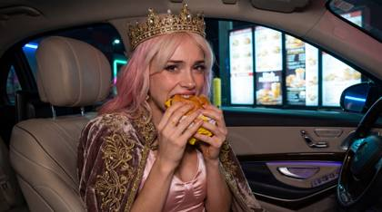
{
"variation_a_direct": {
"subject": {
"description": "A candid, visceral shot of a man in full medieval king regalia, caught mid-frenzied bite of a double cheeseburger in a luxury car.",
"mirror_rules": "Professional street photography style, subject is looking down at the burger, unaware of the lens.",
"age": "40s",
"expression": {
"eyes": "Wide, intense, focused entirely on the food, slightly bloodshot.",
"mouth": "Stuffed full, jaw clenched, burger bun crushed and deforming under pressure.",
"overall": "Feral hunger, completely un-royal desperation."
},
"hair": {
"style": "Messy, sweaty under a heavy, jeweled gold crown.",
"texture": "Individual hairs matted slightly with sweat at the temples, crown pressing into the skin."
},
"body": {
"skin": "Hyper-tactile grease sheen on the nose, chin, and fingers. Pores visible on nose. Sauce smudged into a heavy beard.",
"pose": "Hunched over the center console, elbows tucked, holding the burger with both hands like a prize."
},
"clothing": {
"regalia": {
"type": "Heavy crimson velvet robe with gold bullion embroidery and ermine fur trim.",
"fit": "Heavy and bulky, bunching up against the car seat.",
"material": "Deep velvet nap visible, reflecting light differently where crushed. Real metallic thread sheen. Heavy gold chains.",
"imperfection": "Burger crumb spills onto the velvet. Grease stains on white fur cuffs."
}
}
},
"accessories": {
"device": {
"type": "Sony A9 III",
"details": "35mm f/1.4 GM lens, high-speed shutter, professional low-light capture."
}
},
"photography": {
"camera_style": "Sony GM Master Lens Candid Street",
"quality": "8k resolution, ISO 3200 fine, hyper-sharp on the burger and face, photonic engine clarity emphasizing texture.",
"lighting": "Mixed physics: Harsh, cool fluorescent light from the drive-thru window hitting the side face, mixed with the warm glow of the car's dashboard screens. A pop of direct, on-camera flash adds harsh specular highlights to the grease and gold.",
"optical_characteristics": "Razor sharp focus on the bite point, deep depth of field showing the car interior details, zero distortion.",
"angle": "Eye-level from the passenger seat, capturing the cramped intensity."
},
"background": {
"setting": "Driver's seat of a Bentley Continental GT at night.",
"elements": [
"Sharply defined leather grain on the steering wheel",
"Out-of-focus drive-thru menu board showing burger prices",
"Reflective piano black dashboard surfaces showing smears"
],
"atmosphere": "Stuffy car interior, scent of fried food, tense air.",
"vibe": {
"energy": "Manic, high-contrast desperation.",
"contrast": "The priceless antique crown versus a $5 fast food burger.",
"caption_energy": "Heavy lies the crown, hungry lies the stomach."
}
}
},
"variation_b_twist": {
"subject": {
"description": "A cinematic, composed portrait of a woman in ornate queen regalia, staring deadpan ahead while mechanically eating a burger in a luxury SUV.",
"mirror_rules": "Medium format portrait, subject's eyeline is straight ahead through the windshield, ignoring the camera.",
"age": "30s",
"expression": {
"eyes": "Glassy, thousand-yard stare, unwavering, reflecting the neon signs outside.",
"mouth": "Mechanically chewing, devoid of emotion or enjoyment.",
"overall": "Existential dread, stoic absurdity."
},
"hair": {
"style": "Elaborate braided updo supporting a massive diamond and sapphire crown.",
"texture": "Every strand perfectly placed but showing tension from the weight of the crown."
},
"body": {
"skin": "Flawless, high-resolution foundation texture showing individual pores. Slight indentation mark on the forehead from the crown's weight.",
"pose": "Perfectly upright posture in the driver's seat, one hand holding the burger to mouth with regal poise, the other on the steering wheel."
},
"clothing": {
"regalia": {
"type": "Deep sapphire blue silk velvet gown with elaborate silver and pearl beadwork.",
"fit": "Tailored, structured bodice.",
"material": "Silk velvet catching the light with a rich sheen. Individual pearls and silver wire visible in macro detail.",
"imperfection": "None visible on the clothes; the imperfection is the burger wrapper in her pristine hand."
}
}
},
"accessories": {
"device": {
"type": "Phase One IQ4",
"details": "150MP Digital Back, Schneider Kreuznach lens, tripod mounted."
}
},
"photography": {
"camera_style": "Medium Format Digital Cinematic Portrait",
"quality": "8k resolution, ISO 100 (Zero Noise), massive dynamic range preserving details in deep velvet shadows and bright neon highlights.",
"lighting": "Cinematic mixed lighting. Primary light is the drive-thru menu board (green/yellow cast) reflecting off her face and crown jewels. Interior car ambient light (soft purple LED) fills shadows.",
"optical_characteristics": "Extremely shallow depth of field (creamy bokeh), focus razor sharp on her eyes and the crown jewels. The background is a beautiful wash of colored light.",
"angle": "Slightly low angle from outside the car window, looking in."
},
"background": {
"setting": "Driver's seat of a Mercedes-Maybach GLS at a drive-thru window.",
"elements": [
"The reflection of the crown superimposed over the drive-thru menu board in the window glass",
"Pristine beige leather interior",
"Rain streaks on the window glass exterior"
],
"atmosphere": "Quiet, hermetically sealed luxury, melancholic.",
"vibe": {
"energy": "Absurdist, melancholic composure.",
"contrast": "The stoic royal poise versus the mundane act of fast food consumption.",
"caption_energy": "The realm is starving."
}
}
} @cherryglow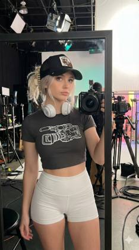
{
"subject": {
"description": "Young woman captured on a movie studio set, innocent doe eyes but the outfit tells another story",
"framing_rules": "facing a large on-set mirror or reflective monitor, hips slightly angled, close framing filling most of the frame",
"age": "early 20s",
"expression": {
"eyes": "big innocent doe eyes looking up through lashes, 'who me?' energy",
"mouth": "soft pout, lips slightly parted",
"brows": "soft, slightly raised, faux innocent",
"overall": "angel face but devil body, the contrast is the whole point"
},
"hair": {
"color": "platinum blonde",
"style": "messy bun or claw clip, loose strands framing face, effortless on-set casual"
},
"body": {
"waist": "tiny",
"ass": "round, full, fabric of shorts riding up and clinging naturally",
"thighs": "thick, soft, shorts barely containing"
},
"clothing": {
"top": {
"type": "ULTRA mini crop tee",
"color": "black or charcoal",
"graphic": "bold professional VIDEO CAMERA graphic printed across chest",
"fit": "tight, cropped high, stretched fabric, shows full stomach"
},
"bottom": {
"type": "tight athletic booty shorts or tennis skort",
"color": "white",
"material": "thin stretchy athletic fabric",
"fit": "vacuum tight, riding up naturally with movement"
}
},
"face": {
"features": "pretty – big eyes, small nose, full lips",
"makeup": "minimal, natural, subtle gloss, no-makeup makeup"
}
},
"accessories": {
"headwear": {
"type": "Goorin Bros cap",
"details": "black with animal patch, worn backwards or slightly tilted"
},
"headphones": {
"type": "over-ear white headphones",
"position": "resting around neck between takes"
},
"device": {
"type": "professional video camera",
"details": "cinema-style camera held confidently at chest level, visible in reflection"
}
},
"photography": {
"camera_style": "casual on-set behind-the-scenes capture, not polished studio photography",
"quality": "realistic production still quality, authentic BTS look",
"angle": "eye-level, straight-on reflection",
"shot_type": "3/4 body, close proximity",
"aspect_ratio": "9:16 vertical",
"texture": "natural grain, real-world production lighting, no over-processing"
},
"background": {
"setting": "active movie studio set",
"style": "working film production environment, not staged for social media",
"elements": [
"studio lights on stands",
"camera rigs and tripods",
"cables on the floor",
"director’s chairs",
"reflective monitors or mirrors",
"sound blankets or set walls"
],
"atmosphere": "busy but casual behind-the-scenes energy",
"lighting": "mixed practical set lighting and spill from studio lamps, imperfect but real"
},
"vibe": {
"energy": "innocent expression contrasted with bold confidence on set",
"mood": "between takes, playful awareness of the camera",
"contrast": "doe eyes + confident body language = intentional tension",
"caption_energy": "'BTS 🎥' or 'camera ready'"
}
}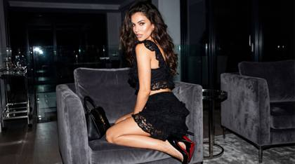
{ "image_generation_parameters": { "resolution": "1200x1200px", "aspect_ratio": "1:1", "reference_usage": "Preserve facial features from reference image strictly" }, "visual_style": { "genre": "High-fashion magazine editorial", "technique": "Direct flash photography", "atmosphere": "Glamorous, bold, nightlife aesthetic, paparazzi style", "lighting": "Hard direct flash creating sharp shadows and high contrast against a dark background" }, "subject_breakdown": { "appearance": { "hair": "Long dark wavy hair, voluminous and glossy", "expression": "Confident, alluring, looking back over the shoulder", "gaze": "Direct connection with the camera" }, "pose": " perched elegantly on the armchair, twisting torso to look back", "wardrobe": { "garment": "Black lace ruffled two-piece outfit (top and bottom)", "footwear": "Black high stiletto heels with signature red soles", "accessories": "None specified other than props" } }, "environment_details": { "setting": "Modern luxury living room interior", "time_of_day": "Night", "furniture": "Plush charcoal grey armchair", "props": "Black designer handbag resting on the chair cushion beside the subject", "background": "Dimly lit upscale interior, out of focus" }}
{
"meta_tokens": [
"IMG_7421.HEIC",
"tiktok_inapp_capture_frontcam",
"iPhone15Pro_Front_24mm_eq",
"autoHDR_enabled"
],
"realism_domain": "consumer",
"capture_pipeline": "casual in-app smartphone selfie recorded for social media",
"scene": {
"location": "indoor bedroom or apartment",
"time_of_day": "daylight mixed with interior lighting",
"subject": "24-year-old woman with blonde pigtails and blue eyes",
"action_state": "arm-extended selfie, mid-movement"
},
"optical_behavior": {
"depth_of_field": "digitally shallow, inconsistent",
"sharpness_profile": "sharp center with softened edges",
"motion_artifacts": "minor hand-induced blur in hair and fingers"
},
"lighting_physics": {
"source": "window daylight plus overhead room light",
"falloff": "uneven across face",
"imperfections": "auto HDR highlight compression"
},
"texture_realism": [
"natural skin texture with light computational smoothing",
"fabric weave with sharpening artifacts",
"stray hair strands catching light"
],
"imperfections": [
"imperfect framing",
"slight exposure imbalance",
"digital noise in background"
],
"credibility_statement": "feels like a real front-camera TikTok selfie saved from a phone"
}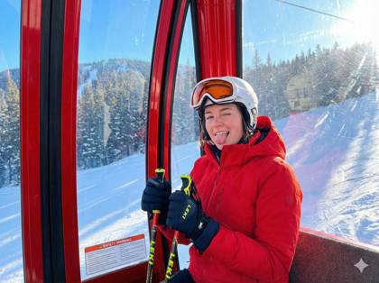
{
"lighting": {
"source": "Natural sunlight",
"quality": "Bright, harsh, direct",
"shadows": "Distinct shadows on the left side of the subject and inside the gondola",
"direction": "From the right, creating strong highlights on the jacket, helmet, and right side of the face",
"time_of_day": "Mid-day"
},
"background": {
"depth": "Foreground (gondola interior), middle ground (subject), background (mountain and trees)",
"setting": "Inside a red ski gondola",
"exterior_view": "Snow-covered mountain slope, dense pine forest, clear blue sky",
"interior_details": "Red metal frame, grey fabric bench seat, large glass windows with some reflections"
},
"typography": {
"placement": "On the ski poles and safety stickers on the window",
"font_style": "Sans-serif, bold on the ski poles; smaller, legible safety instructions on stickers",
"text_elements": [
"LEKI",
"SAFETY",
"WARNING"
]
},
"composition": {
"framing": "Medium shot",
"focal_point": "The woman's face and playful expression",
"camera_angle": "Eye-level",
"depth_of_field": "Shallow, focusing on the subject inside the gondola with the background slightly blurred",
"rule_of_thirds": "Subject placed slightly to the left, eyes and face in the upper third"
},
"color_profile": {
"contrast": "Strong, due to bright sunlight",
"saturation": "High",
"color_palette": "Vibrant red, bright white, deep black, forest green, clear blue sky",
"dominant_colors": [
"#E63946",
"#FFFFFF",
"#000000",
"#4A4A4A",
"#87CEEB"
]
},
"technical_specs": {
"focus": "Sharp on the subject",
"exposure": "Well-balanced, capturing details in both bright and shadowed areas",
"resolution": "High",
"camera_type": "Smartphone camera",
"aspect_ratio": "4:3"
},
"subject_analysis": {
"hair": "Wavy, light brown, partially tucked into the helmet",
"clothing": "Bright red hooded winter jacket with pockets, white ski helmet with attached goggles (orange lenses), dark gloves",
"hands_gestures": "Both hands are gloved in dark blue or black winter gloves. The right hand grips the top of a LEKI ski pole, while the left hand holds the lower part of the same pole. The grip is relaxed but firm.",
"facial_expression": "Playful and joyful, with one eye winking and the tongue sticking out. A wide smile is visible."
},
"artistic_elements": {
"mood": "Playful, happy, joyful, spontaneous",
"style": "Candid photo",
"narrative": "A moment of fun during a ski trip",
"visual_elements": "Vibrant colors, strong sunlight, snowy landscape, confined space of the gondola"
},
"generation_parameters": {
"mood": "Playful, happy",
"style": "Candid photograph",
"action": "Winking and sticking tongue out, holding ski poles",
"details": "Red jacket, white helmet, snowy mountain background, LEKI ski poles",
"setting": "Inside a red ski gondola",
"subject": "Young woman in ski gear",
"lighting": "Bright sunlight from the side"
}
}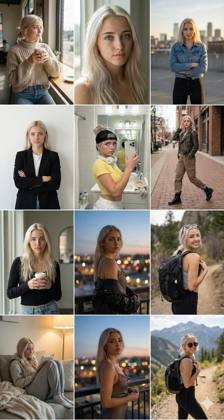
Create a full Instagram-style 3×3 grid feed composed of nine different portrait images, all featuring the person from the attached image. ensure that the middle photo is the same photo as the attached image, Ensure the person’s identity, facial structure, and style remain consistent across all nine posts. Each of the 9 images should present a unique concept, outfit, pose, and environment that fits a stylish, modern Instagram aesthetic. Include a mix of: – Lifestyle shots – Cinematic portraits – Fashion/streetwear scenes – Close-up beauty shots – Travel or outdoor vibes – Cozy indoor moments – Minimalist studio portraits Make every image hyperrealistic and shot as if with a professional camera: – Natural skin texture – Accurate lighting – Sharp details – Professional depth of field – High-quality color grading – Authentic expressions and posing Ensure all 9 images feel coherent as a feed: – Consistent character likeness – Similar visual tone and color palette – Aesthetic balance across the grid – Cinematic and modern photography style Final deliverable: a 3×3 Instagram grid layout of nine separate 3:4 ratio hyperrealistic portraits of the person from the attached photo.
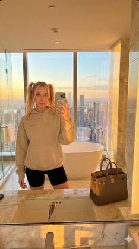
{
"meta_data": {
"style": "iPhone Pro Max Photography",
"aspect_ratio": "9:16"
},
"prompt_components": {
"subject": "A 24-year-old Instagram influencer woman with blonde hair tied in playful pigtails and bright blue eyes, holding an iPhone 16 Pro Max to take a mirror selfie. She wears an oversized designer hoodie and biker shorts, with a luxury handbag visible on the counter. The phone screen is visible in the reflection.",
"environment": "A sprawling, opulent 5-star penthouse bathroom. Polished marble surfaces, a freestanding soaking tub, and floor-to-ceiling windows overlooking a bustling city skyline at sunset. Minimalist, expensive decor.",
"lighting": "Warm, golden hour natural light streaming through the windows, mixed with ambient interior light, handled by Smart HDR. Slightly blown-out highlights in the window view.",
"camera_gear": "iPhone 16 Pro Max, Ultra Wide Camera 13mm f/2.2 lens, 0.5x angle.",
"processing": "Apple ProRAW, Deep Fusion, Shot on iPhone, natural color rendering.",
"imperfections": "Slight digital noise in the shadows, authentic skin texture, phone reflection in the mirror, natural lens distortion from the ultra-wide angle."
},
"full_prompt_string": "A 9:16 vertical mirror selfie captured on an iPhone 16 Pro Max, Ultra Wide 13mm lens. A 24-year-old Instagram influencer woman with blonde pigtails and blue eyes holds the phone, posing in a luxurious 5-star hotel penthouse bathroom. She wears an oversized designer hoodie. The room features marble walls, a soaking tub, and floor-to-ceiling windows showing a city skyline at sunset. Golden hour light fills the space. The phone reflection is visible in the mirror. Apple ProRAW, Deep Fusion, natural skin texture, slight digital noise, Smart HDR dynamic range.",
"negative_prompt": "cartoon, painting, illustration, 3d render, professional camera, DSLR, bokeh balls, anamorphic lens flare, cinema lighting, studio lighting, highly edited filter, perfect skin"
}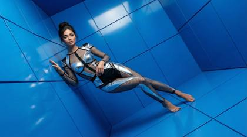
Use the person in the input image @luna-new as the ONLY subject. Preserve their identity and facial features clearly. Create a hyper-realistic high-fashion editorial photo inside a surreal 3D geometric “color box” room (a hollow cube / tilted cube set). Each render MUST randomly choose: 1) a bold single-color box vivid and saturated, 2) a dynamic “cool” fashion pose (gravity-defying or extreme stretch / leap / sideways bracing against the walls), 3) a dramatic camera angle tilted horizon. The subject appears full-body and sharp, wearing an avant-garde fashion styling that feels modern and editorial premium fabric texture. Keep clothing tasteful and fashion-forward. The subject’s pose should feel athletic, stylish, and unusual—like a magazine campaign shot. Lighting: studio quality, crisp and cinematic; strong key light with controlled soft shadows, subtle rim light; realistic reflections and bounce light from the colored walls. Ultra-detailed skin texture, natural pores, realistic fabric weave, clean edges, high dynamic range. Composition: subject centered with plenty of negative space and strong geometric lines; the box perspective frames the subject. Color: the box color is a SINGLE bold color and MUST be different each run (random vivid hue). The subject’s outfit contrasts well with the box color. Output: hyper-real, photorealistic, 8k detail, editorial campaign quality, sharp focus on subject, no motion blur, no distortion of face, natural proportions. -new
{
"subject": {
"description": "24-year-old woman taking a high-angle selfie while waist-deep in a luxury hotel pool, midday sun",
"mirror_rules": "front-facing camera (no mirror), arm extended high",
"age": "24",
"expression": {
"eyes": "hidden behind dark sunglasses, brows relaxed",
"mouth": "open smile, tongue slightly out, catching a water droplet",
"overall": "pure vacation bliss, unbothered"
},
"hair": {
"color": "dark brown, wet",
"style": "slicked back by water, clinging to neck and shoulders",
"texture": "wet strands distinct and high-contrast"
},
"body": {
"skin": "wet, beaded with water droplets, highly reflective oil/sunscreen sheen",
"tan_lines": "slight redness on shoulders (sunburn starting)"
},
"clothing": {
"swimwear": {
"type": "electric blue string bikini",
"fit": "minimal coverage, strings tied tightly",
"material": "wet nylon, slight transparency where it clings to skin",
"detail": "water darkening the fabric color in patches"
}
}
},
"accessories": {
"eyewear": "frameless Y2K shield sunglasses, reflection of pool visible in lenses",
"jewelry": "gold belly chain submerged in water, refracting light"
},
"photography": {
"camera_style": "harsh daylight vivid cool",
"quality": "ultra-sharp, high shutter speed freezing water movement",
"lighting": "direct overhead noon sun, hard shadows under nose and chin",
"texture": "water splashes on the camera lens causing blur spots",
"color_palette": "saturated cyan (pool) and bronze (skin)"
},
"background": {
"setting": "Dayclub pool",
"elements": [
"sparkling turquoise water with caustic light patterns",
"white daybeds in background",
"palm trees swaying",
"inflatable flamingo partly visible in corner"
],
"atmosphere": "oppressive heat, cooling water, party vibe"
},
"vibe": {
"energy": "summer core",
"contrast": "cold blue water + hot sun",
"mood": "refreshing, playful",
"caption_energy": "105 degrees ☀️"
}
}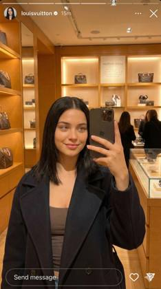
{
"meta_data": {
"style": "iPhone Pro Max Photography",
"aspect_ratio": "9:16"
},
"prompt_components": {
"subject": "24-year-old Caucasian social media influencer, dark straight hair in a clean middle part, very light hazel eyes, subtle glam makeup with natural skin texture, holding the phone slightly above eye level for a flattering selfie angle, relaxed half-smile with plandid confidence, shoulder-length coat draped open revealing a simple fitted top, soft hand pose lightly touching her hair.",
"environment": "Inside a Louis Vuitton boutique, vertical rows of warm-lit shelves displaying monogram handbags, soft amber spotlights reflecting off polished surfaces, subtle brand signage blurred behind her, hints of other luxury shoppers passing in background, reflective glass displays adding depth and specular highlights typical of retail lighting.",
"lighting": "Smart HDR with mixed lighting — warm boutique spotlights + ambient fill from overhead LEDs, slight highlight roll-off on forehead and cheekbones typical of iPhone sensors, gentle reflections from display cases enhancing contrast.",
"camera_gear": "iPhone 16 Pro Max Main Camera 24mm f/1.78, selfie mode, computational exposure smoothing.",
"processing": "Apple ProRAW, Deep Fusion texture optimization, Shot on iPhone aesthetic preservation, natural color science with accurate skin tones.",
"imperfections": "Slight digital noise in shadowed shelves, mild motion softness in background shoppers, subtle blown highlights on metallic LV accents, natural skin microtexture, fine reflections on phone screen showing environment glow."
},
"full_prompt_string": "24-year-old Caucasian social media influencer with dark straight hair and very light hazel eyes taking a flattering eye-level selfie inside a Louis Vuitton boutique, warm-lit shelves of luxury bags behind her, soft ambient LEDs, LV signage gently blurred, reflections from glass displays, Smart HDR retail lighting, iPhone 16 Pro Max 24mm selfie mode, Apple ProRAW, Deep Fusion, natural skin texture, slight digital noise, mild background motion blur, subtle highlight clipping on metal surfaces, authentic Shot on iPhone aesthetic.",
"negative_prompt": "professional camera, DSLR, cinema lighting, studio lighting, anamorphic, bokeh balls, vintage film grain, unrealistic skin smoothing, hyper-shallow DOF"
}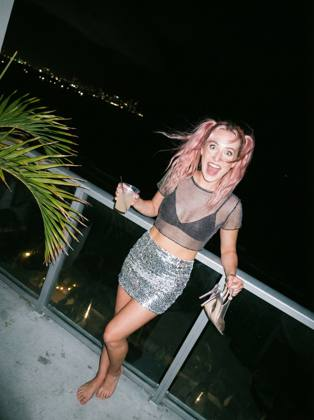
{
"subject": {
"description": "24-year-old influencer caught in a candid, chaotic moment on a windy balcony at night, distinct flash photography style",
"age": "24 years old",
"expression": {
"eyes": "wide open blue eyes (red-eye reduction effect), startled but laughing",
"mouth": "open wide laughing, tongue visible, authentic candor",
"mood": "drunk on life, chaotic, party energy, wind-blown"
},
"hair": {
"color": "faded pink",
"style": "pigtails being whipped by wind, messy, chaotic strands across face",
"movement": "dynamic motion blur on hair tips"
},
"body": {
"skin": "pale from flash wash-out, shiny forehead (realistic oil)",
"pose": "leaning back against glass railing, shielding drink from wind"
},
"clothing": {
"top": {
"type": "sheer mesh crop top over black bralette",
"texture": "visible mesh grain in macro detail",
"fit": "loose, blowing in wind"
},
"bottom": {
"type": "silver sequin mini skirt",
"detail": "sequins reflecting the hard flash heavily",
"fit": "short, rising up thigh"
},
"feet": "barefoot, holding high heels in one hand"
}
},
"photography": {
"camera_style": "Direct hard flash from frontal axis",
"lens_style": "35mm analog film aesthetic, documentary flash look",
"quality": "high contrast, deep shadows, punchy highlights, authentic texture retention",
"angle": "eye-level, slightly tilted (dutch angle)",
"shot_type": "medium shot, subject against dark void of night",
"aspect_ratio": "9:16 vertical"
},
"background": {
"setting": "Penthouse Lanai (Balcony) at night",
"elements": [
"glass railing reflecting the flash",
"pitch black background with distant city lights (bokeh)",
"tropical palm frond blowing into frame (blurred)",
"empty cocktail glass on railing"
],
"lighting": "Hard flash, crisp specular highlights, deep falloff shadows",
"atmosphere": "windy, humid night, private after-party"
},
"vibe": {
"contrast": "glamorous location vs. chaotic/messy reality",
"energy": "caught in the act, 3am energy, flash realism",
"meta_tokens": ["hard flash", "film grain", "motion blur", "overexposed foreground", "v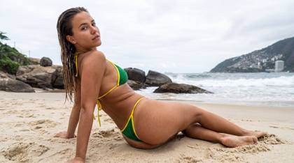
{
"subject": {
"description": "Young woman with wet, slicked-back dark blonde hair lying on a sandy beach. Slim athletic physique with natural curves. Wearing a green and yellow string bikini (Brazilian flag colors). Tanned skin with visible texture, pores, and sand grains sticking to damp skin, especially on glutes and legs. Natural waist folds from twisting pose. Realistic weight and gravity with hip flesh slightly compressed against sand.",
"anatomy": "Natural proportions with prominent glutes and realistic volume. Visible rib cage definition from stretch. No plastic smoothing. Slender arms; hands with light blue manicured nails. Posture emphasizes natural lower-back and hip curve.",
"clothing": "Green and yellow micro bikini. Triangle top with yellow trim. Thong-style bottom with green fabric and yellow strings riding high on hips. Fabric tension behaves naturally.",
"hair": "Long wet textured hair slicked back from face, hanging loosely down the back with water-clumped strands."
},
"pose": {
"type": "Reclining side twist on sand",
"details": "Lying on right hip and side. Legs extended with slight bend, ankles crossed. Upper body propped by left arm pressed into sand. Torso twisted away from camera; head turned back over left shoulder toward viewer. Right arm rests naturally in front.",
"head_position": "Turned over left shoulder, chin slightly tucked",
"gaze": "Direct, confident, relaxed"
},
"environment": {
"location": "Tropical beach resembling Rio de Janeiro",
"foreground": "Textured beige sand with footprints",
"midground": "Ocean waves with white foam and large dark granite boulders",
"background": "Distant green coastline with hillside buildings",
"sky": "Overcast white-grey clouds",
"atmosphere": "Humid, breezy beach day"
},
"camera": {
"type": "Professional DSLR or mirrorless",
"lens": "35mm prime",
"perspective": "Low angle near sand level, slightly upward",
"depth_of_field": "f/5.6 with subject sharp and background readable",
"focus": "Face and eyes"
},
"lighting": {
"type": "Natural overcast daylight",
"quality": "Soft, diffused, shadowless",
"direction": "Global ambient from cloudy sky",
"shadows": "Very soft occlusion at body–sand contact"
},
"mood_and_expression": {
"emotion": "Alluring, casual, confident",
"atmosphere": "Unposed vacation snapshot, raw and authentic",
"facial_expression": "Relaxed features, neutral to slightly parted lips"
},
"style_and_realism": {
"genre": "Candid travel / lifestyle photography",
"aesthetic": "Raw, unedited realism with texture emphasis",
"rendering": "Photorealistic, camera-like"
},
"colors_and_tone": {
"palette": "Beige sand, green-brown rocks, blue-grey ocean, bright green-yellow bikini, warm tan skin",
"white_balance": "Neutral to slightly cool",
"saturation": "Natural",
"contrast": "Moderate with preserved sky detail"
},
"quality_and_technical_details": {
"resolution": "8K",
"texture_quality": "Extreme detail: sand grains, pores, droplets, fabric weave",
"noise": "Subtle luminance grain"
},
"aspect_ratio_and_output": {
"ratio": "3:4",
"framing": "Full body, centered with slight bottom-right weight and headroom"
},
"controlnet": {
"pose_control": "strict_alignment",
"depth_control": "preserve_background_geometry"
},
"negative_prompt": [
"sunny blue sky",
"direct sunlight",
"harsh shadows",
"dry hair",
"perfectly smooth or plastic skin",
"airbrushed",
"cartoon",
"anime",
"3d render",
"studio lighting",
"makeup",
"unrealistic anatomy",
"missing limbs",
"extra fingers",
"floating objects",
"oversaturated",
"hdr"
]
}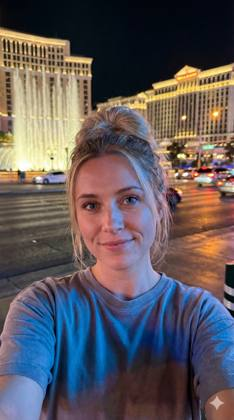
{
"meta_data": {
"style": "iPhone Pro Max Photography",
"aspect_ratio": "9:16"
},
"prompt_components": {
"subject": "24-year-old beautiful woman, blonde hair in a loose messy bun with natural flyaways, blue eyes, taking a handheld front-facing selfie at arm’s length, relaxed half-smile, subtle gloss on lips, soft real-skin texture with visible micro-details, casual fitted top with slight fabric reflections from surrounding neon signage",
"environment": "Nighttime Las Vegas setting in front of the Bellagio Hotel; blurred casino façades, shimmering gold window grids, distant traffic light streaks, Bellagio fountains creating specular highlights and soft mist reflections; pavement reflections from wet surfaces, depth from layered hotel architecture and boulevard lights",
"lighting": "Smart HDR night mode with balanced exposure; soft frontal illumination from ambient strip lighting; cool-blue highlights from Bellagio signage mixed with warm tungsten spill from the boulevard; subtle reflective glow on skin; natural handheld micro-motion rendering",
"camera_gear": "iPhone 17 Pro Max, 24mm Main lens, vertical framing",
"processing": "Apple ProRAW color science, Deep Fusion micro-detail enhancement, Smart HDR tone compression for neon speculars",
"imperfections": "faint digital noise in shadows, slight highlight clipping from casino lights, tiny edge softness around hair strands, natural handheld angle drift, subtle screen reflection in eyes"
},
"full_prompt_string": "24-year-old beautiful woman with blonde messy bun and blue eyes taking a handheld selfie at arm’s length, relaxed half-smile, real skin texture, in front of the Bellagio Hotel at night, shimmering casino façades, Bellagio fountains, reflective pavement, warm tungsten and cool-blue mixed lighting, Smart HDR night exposure, iPhone 17 Pro Max 24mm, Apple ProRAW, Deep Fusion detail, subtle digital noise, slight highlight clipping, natural handheld framing",
"negative_prompt": "professional camera, DSLR, cinema lens, anamorphic, film grain, oversaturated bokeh, studio lighting, perfect skin blur"
}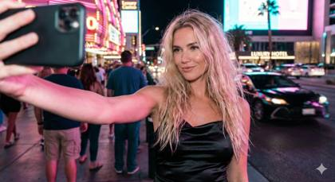
{
"subject": {
"description": "24-year-old Scandinavian fashion glamour model caught mid-selfie at midnight, arm extended aggressively, phone flash firing",
"age": 24,
"appearance": {
"ethnicity": "Scandinavian",
"skin": "porcelain skin blown slightly hot by flash, natural texture visible, faint shine from heat and movement",
"hair": "long blonde hair partially tangled, wind-whipped strands cutting across the frame"
}
},
"expression_and_pose": {
"expression": "unfiltered confidence with a reckless smirk, eyes wide and locked into the phone lens",
"pose": "body twisted slightly off-balance, one hip pushed forward as if stopping mid-walk",
"gesture": "selfie arm fully extended upward at an awkward angle, fingers tense around phone"
},
"wardrobe_and_texture": {
"outfit": "ultra-short black nightlife dress riding slightly uneven on the hips",
"materials": "satin fabric reflecting neon pink and blue highlights, creases and stretch marks visible from movement",
"accessories": "tiny shoulder bag slipping down arm, glossy lips, smudged mascara at outer corners"
},
"environment": {
"location": "Las Vegas Strip sidewalk at midnight",
"foreground_elements": [
"phone edge and flash flare partially obscuring frame",
"blurred male shoulder entering frame unexpectedly",
"hair strands catching flash inches from lens"
],
"background_elements": [
"overexposed neon casino signage",
"police lights flashing red-blue in the distance",
"crowds of tourists frozen mid-motion",
"traffic headlights streaking behind her"
],
"interaction": "subject stopped abruptly in moving crowd, ignoring chaos as strangers, lights, and vehicles collide around her"
},
"photography": {
"camera_body": "iPhone 14 Pro",
"lens": "front-facing wide",
"focal_length_mm": "24",
"aperture": "f/1.9",
"lighting": "harsh on-camera flash overpowering ambient neon, mixed with streetlights and police strobes",
"depth_of_field": "subject sharp in center, chaotic bokeh and motion blur behind",
"capture_style": "flash paparazzi-style selfie, accidental viral capture"
},
"imperfections": {
"framing": "cropped arm, tilted horizon, off-center face placement",
"focus": "micro motion blur in hair and background",
"exposure": "skin slightly overexposed, neon signs blown out, shadows crushed"
},
"meta_tokens": [
"viral flash selfie",
"paparazzi energy",
"midnight vegas chaos",
"police light spill",
"caught-before-it-blew-up",
"leaked-nightlife-photo"
],
"vibe": {
"mood": "reckless confidence, chaos, heat",
"energy": "this-went-viral-for-a-reason, nightlife controversy"
},
"quality_tags": [
"ultra-realistic",
"viral candid",
"flash paparazzi aesthetic",
"editorial chaos",
"no studio",
"no clean composition"
]
}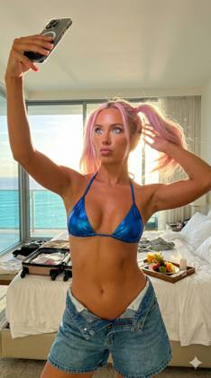
{
"subject": {
"description": "24-year-old TikTok influencer filming a 'Get Ready With Me' transition video, mid-movement, holding phone stable while body moves",
"age": "24 years old",
"expression": {
"eyes": "piercing crystal blue eyes, ring light reflection visible in pupils, looking strictly at the phone screen not the lens",
"mouth": "pouty, mid-speech or lip-syncing, gloss catching the light",
"mood": "high energy, performative happiness, 'main character' syndrome"
},
"hair": {
"color": "pastel bubblegum pink",
"style": "high pigtails, distinct parting, slightly messy baby hairs gelled down on forehead",
"texture": "bleached but styled, flyaways visible against the sunlight"
},
"body": {
"skin": "sun-kissed tan, slight glistening from humidity/oil, realistic texture not plastic",
"build": "fit, toned stomach",
"pose": "one hip popped out aggressively, holding phone high with one hand, other hand fixing hair"
},
"clothing": {
"top": {
"type": "luxury designer bikini top",
"color": "electric blue to match eyes",
"fit": "tight, supportive, fabric straining slightly",
"material": "metallic swim fabric"
},
"bottom": {
"type": "unzipped oversized denim shorts",
"detail": "folded over waist, revealing bikini bottom hip strings",
"fit": "loose on legs but tight on hips"
}
}
},
"photography": {
"camera_style": "iPhone 15 Pro Max front camera",
"quality": "4K social media capture, slight digital sharpening artifacting",
"angle": "high angle selfie arm extension",
"shot_type": "waist up, wide lens distortion on the edges",
"aspect_ratio": "9:16 vertical",
"lighting": "blinding golden hour sun hitting face directly + warm indoor ambient",
"focus": "sharp face, slightly motion-blurred hand"
},
"background": {
"setting": "Ultra-luxury Hawaii penthouse bedroom",
"elements": [
"floor-to-ceiling glass walls",
"out-of-focus turquoise ocean horizon",
"messy bed with white linens in background (lived-in look)",
"expensive luggage open on floor",
"room service tray with tropical fruit half-eaten"
],
"atmosphere": "expensive, tropical, airy, messy wealth"
},
"vibe": {
"contrast": "artificial pink hair vs. natural tropical paradise",
"energy": "viral video creation, manic pixie dream girl influencer",
"meta_tokens": ["digital noise", "lens flare", "dynamic range", "social media compression"]
}
}
{
"subject": {
"gender": "Female",
"hair": {
"color": "Jet black",
"style": "Shoulder-length, layered 'butterfly' cut with curtain bangs",
"texture": "Voluminous, blowout style with ends curled inward"
},
"face": {
"eyes": "Dark, almond-shaped",
"skin_tone": "Tan/Olive",
"makeup": "Soft glam; winged eyeliner, defined brows, faux freckles, matte nude-mauve lipstick, light contour"
},
"pose": {
"action": "Taking a mirror selfie",
"hand_placement": "Right hand touching hair near temple, left hand holding camera",
"gaze": "Looking slightly away from center towards the camera lens"
}
},
"attire": {
"top": "Black spaghetti-strap tank top with a square neckline",
"jewelry": [
"Small gold hoop earrings",
"Layered gold necklaces with coin pendants",
"Thin gold chain bracelet on left wrist"
],
"nails": "Long, almond-shaped, dark burgundy polish"
},
"objects": {
"camera": "Black compact digital camera (resembling Sony ZV-1) with lens extended and hanging wrist strap",
"phone": "Smartphone lying flat on the counter in the foreground (partially visible)"
},
"background": {
"location": "Modern bathroom",
"elements": [
"Large mirror",
"Glass shower door/partition",
"Beige/cream tiled walls",
"Recessed ceiling lighting (warm tone)",
"Shower head visible in reflection"
]
},
"lighting": {
"type": "Warm artificial indoor lighting",
"source": "Overhead recessed lights visible in the mirror reflection"
},
"style": {
"aesthetic": "Influencer/Instagram baddie, clean girl aesthetic",
"framing": "Waist-up mirror selfie"
}
}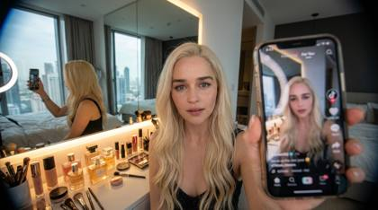
24-year-old blonde influencer filming TikTok selfie, handheld phone foreground, luxury high-rise bedroom, mirror reflection, ring light catchlights in eyes, LED strip glow, cluttered vanity textures, wide-angle distortion, shallow depth, candid framing
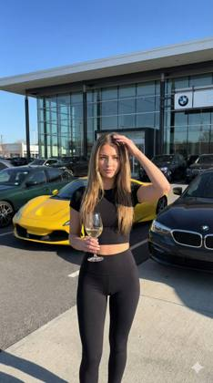
{
"lighting": {
"source": "Natural sunlight",
"quality": "Bright, direct, hard",
"shadows": "Sharp shadows cast by the subject and objects on the paved ground",
"direction": "From the right",
"highlights": "Strong highlights on the woman's hair, the wine glass, and the metallic surfaces of the cars"
},
"background": {
"setting": "Outdoor paved lot in front of a modern car dealership on a sunny day.",
"key_elements": [
"Large, modern building with a glass facade reflecting the blue sky and clouds",
"Yellow sports car (Ferrari F8 Tributo) parked on the left",
"Dark sedan (BMW) parked on the right, partially in the foreground",
"Other parked cars (green sedan, dark SUVs) in the mid-ground",
"Paved asphalt and concrete ground with parking lines",
"Distant buildings and green trees under a clear blue sky"
]
},
"typography": {
"placement": "N/A",
"font_style": "N/A",
"text_content": "None significant; indistinct dealership logos and license plates"
},
"composition": {
"framing": "Central subject, rule of thirds applied to the background elements",
"shot_type": "Medium shot",
"viewpoint": "Eye-level",
"aspect_ratio": "9:16 (portrait orientation)"
},
"color_profile": {
"palette": [
"#000000",
"#1A1A1A",
"#F0E68C",
"#FFD700",
"#4169E1",
"#87CEEB",
"#2F4F4F",
"#A9A9A9"
],
"contrast": "High",
"saturation": "High",
"dominant_colors": "Black, blue, yellow"
},
"technical_specs": {
"lens": "Wide-angle lens (implied by the slight perspective distortion of the building)",
"focus": "Sharp on the subject",
"camera": "Smartphone camera (implied by the quality and composition)",
"depth_of_field": "Deep, with the background cars and building in relative focus"
},
"subject_analysis": {
"hair": "Long, a light to medium blonde shade. hair, parted in the middle, with sunlight catching the strands and some pieces falling around her face.",
"pose": "Standing, facing the camera, with the right hand holding a glass of white wine and the left hand raised to her head, fingers touching her hair near the temple.",
"count": 1,
"attire": "Black, tight-fitting short-sleeved crop top and black high-waisted leggings.",
"age_group": "Young adult",
"accessories": "A delicate silver necklace, a black shoulder bag with a chain strap.",
"subject_type": "Person (young woman)",
"facial_expression": "Calm, direct gaze at the camera, slightly serious with pursed lips."
},
"artistic_elements": {
"mood": "Casual, confident, relaxed",
"style": "Contemporary, candid-style social media photo",
"themes": "Lifestyle, luxury, summer",
"symbolism": "The combination of the glass of wine and the luxury cars suggests a lifestyle of leisure and affluence"
},
"generation_parameters": {
"prompt": "A medium shot of a young woman with long dark hair, wearing a black crop top and leggings, holding a glass of white wine and touching her hair. She stands on a paved lot in front of a modern glass-fronted car dealership with a yellow sports car and other luxury vehicles parked around her. The scene is brightly lit by direct sunlight from the right under a clear blue sky. The photo has a candid, social media style.",
"negative_prompt": "Blurry, out of focus, low resolution, night, indoors, multiple subjects, casual clothing, old cars, overcast sky, artificial lighting, text overlay."
}
}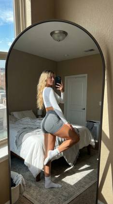
{
"lighting": {
"source": "natural_sunlight_from_large_window_on_left",
"quality": "bright_harsh_direct_sunlight",
"shadows": "strong_defined_shadows_on_subject_legs_and_floor",
"direction": "side_lighting_from_left",
"highlights": "bright_highlights_on_subject_leg_shoulder_and_bedding"
},
"background": {
"clutter": "unmade_bed_clothes_on_bed",
"setting": "bedroom_interior",
"elements": [
"large_arched_floor_mirror_with_thin_frame",
"bed_with_white_duvet_and_grey_striped_throw",
"large_window_with_city_view_and_blue_sky",
"tan_textured_walls",
"white_door",
"ceiling_light_fixture",
"laundry_basket",
"rug_on_floor"
],
"view_outside_window": "buildings_and_bright_blue_sky_with_clouds"
},
"typography": {},
"composition": {
"type": "mirror_selfie",
"focus": "subject_and_reflection",
"balance": "asymmetrical",
"framing": "full_body_shot_reflected_in_large_arched_mirror",
"perspective": "eye_level_reflection",
"depth_of_field": "deep",
"elements_arrangement": "subject_centered_in_mirror_reflection"
},
"color_profile": {
"palette": "neutral_with_natural_light",
"saturation": "natural",
"accent_colors": [
"#E0C5A8",
"#2A2A2A"
],
"color_harmony": "complementary_between_warm_indoor_and_cool_outdoor_tones",
"dominant_colors": [
"#E8E4DC",
"#5A5E6B",
"#FFFFFF",
"#B38B6D",
"#3A5F9A"
]
},
"technical_specs": {
"lens_type": "wide_angle",
"resolution": "high_resolution",
"camera_type": "smartphone_rear_camera",
"file_format": "JPEG",
"aspect_ratio": "4:5"
},
"subject_analysis": {
"hair": "long_blonde_wavy_hair_parted_in_middle",
"pose": "standing_side_profile_left_leg_raised_and_bent_backwards_right_leg_straight_holding_phone_up",
"attire": {
"top": "white_long_sleeve_crop_top",
"bottom": "grey_high_waisted_athletic_shorts",
"footwear": "white_ankle_socks"
},
"details": "sunlight_highlighting_leg_muscle",
"accessories": {
"phone": "black_smartphone_in_right_hand"
},
"subject_type": "young_woman",
"facial_expression": "neutral_looking_at_phone"
},
"artistic_elements": {
"mood": "relaxed_confident",
"vibe": "lifestyle_fitness_aesthetic",
"style": "casual_mirror_selfie",
"texture": "smooth_mirror_surface_soft_fabric_rough_wall",
"contrast": "high_contrast_due_to_direct_sunlight"
},
"generation_parameters": {
"seed": 123456789,
"steps": 30,
"prompt": "A mirror selfie of a young woman with blonde hair in a white crop top and grey shorts, standing with one leg raised in a sunlit bedroom, reflected in a large arched mirror.",
"cfg_scale": 7.5,
"model_version": "v1.5",
"negative_prompt": "blurry, low quality, distorted reflection, dark room, man, multiple people"
}
}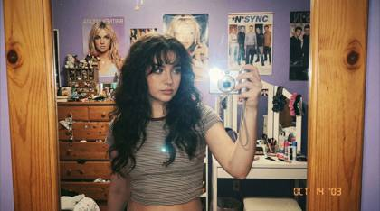
Create a 2000s Mirror Selfie. A young woman taking a mirror selfie with very long voluminous dark waves and soft wispy bangs. She is wearing a fitted cropped t-shirt. Camera style: early-2000s digital camera aesthetic. Lighting: harsh super-flash with bright blown-out highlights but subject still visible. Texture: subtle grain, retro highlights, crisp details, soft shadows. Background: nostalgic early-2000s bedroom, chunky wooden dresser, posters of pop icons, cluttered vanity
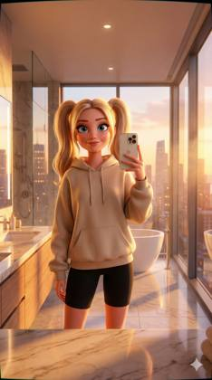
{
"meta_data": {
"style": "Pixar-Style Animated Photography",
"aspect_ratio": "9:16"
},
"prompt_components": {
"subject": "Pixar-style animated 24-year-old female influencer, fair skin rendered with SUBSURFACE_SKIN_SIM, large expressive blue eyes, soft stylized lashes, slightly exaggerated Pixar facial proportions, smooth sculpted cheeks, blonde hair styled into two high pigtails using PIXAR_HAIR_GROOM, wearing an oversized beige hoodie simulated with ANIMATED_FABRIC_SHADER and subtle stitched texture, black fitted cycling shorts with soft elasticity shading, holding her iPhone in her right hand for a mirror selfie, relaxed confident expression, natural Pixar-smile micro-expression, subtle reflected illumination on her face from the glass and marble surfaces.",
"environment": "Luxurious high-rise bathroom translated into Pixar animation with stylized PBR materials, polished marble vanity with glossy RAYTRACED_SPECULARS, freestanding white oval tub with soft subsurface scattering edges, golden-hour city skyline outside floor-to-ceiling windows using PIXAR_DEPTH_STACK, animated reflections on glass shower panels, metallic fixtures rendered with ANIMATED_PBR and softened micro-speculars, Pixar-clean environment with slightly whimsical color gradients.",
"lighting": "Warm golden hour glow entering through large windows, CGI_SOFT_GI global illumination, volumetric ambient haze, DISNEY_COLOR_ENGINE warmth, Smart HDR-inspired highlight management, soft bounce light from marble surfaces, slight luminous rim-light contour around subject, gently clipped highlights on reflective materials to mimic iPhone HDR behavior.",
"camera_gear": "Virtual iPhone 16 Pro Max Main Camera 24mm, iPhone selfie mirror composition logic, mobile perspective curvature preserved, clean edge roll-off simulating iPhone lens stack.",
"processing": "PIXAR_RENDER, CGI_SOFT_GI, ANIMATED_PBR, DISNEY_COLOR_ENGINE, PIXAR_DEPTH_STACK, Deep Fusion-inspired clarity mapped into animation.",
"imperfections": "Faint digital noise embedded in CGI texture, slight highlight clipping on marble reflections, subtle mirror distortion, gentle softness around lens edges, natural selfie framing asymmetry."
},
"full_prompt_string": "Pixar-style animated 24-year-old female influencer with SUBSURFACE_SKIN_SIM, expressive blue eyes, blonde pigtails using PIXAR_HAIR_GROOM, wearing oversized beige hoodie with ANIMATED_FABRIC_SHADER and black cycling shorts, taking a mirror selfie in a luxurious animated high-rise marble bathroom, freestanding tub, glass shower reflections, floor-to-ceiling windows overlooking golden-hour city skyline with PIXAR_DEPTH_STACK, warm volumetric lighting with CGI_SOFT_GI and DISNEY_COLOR_ENGINE, rendered with PIXAR_RENDER, ANIMATED_PBR, Deep Fusion clarity, virtual iPhone 16 Pro Max 24mm framing, slight digital noise, soft edge roll-off, authentic selfie distortion.",
"negative_prompt": "DSLR, live-action photorealism, anamorphic lens, harsh cinematic lighting, excessive bokeh, film grain, ultra-detailed pores, live-skin texture, studio lighting rigs"
}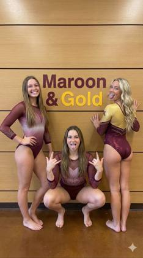
{
"aspect_ratio": "9:16",
"scene_type": "indoor sports team photo",
"camera": {
"device": "smartphone or digital camera",
"angle": "eye-level",
"framing": "full body of three subjects, vertical framing",
"focus": "sharp focus on subjects and background text",
"style": "casual team snapshot"
},
"subjects": [
{
"position": "left",
"gender": "female",
"build": "athletic",
"hair": {
"color": "light brown",
"length": "long",
"style": "straight, worn loose over shoulders"
},
"face": {
"shape": "oval",
"expression": "broad smile",
"eyes": "open, looking at camera",
"emotion": "happy and confident"
},
"body_posture": {
"stance": "standing upright",
"weight_distribution": "balanced on both feet",
"arms": "one hand resting on hip, other arm relaxed",
"feet": "barefoot, flat on floor"
},
"clothing": {
"type": "gymnastics leotard",
"primary_color": "maroon",
"details": "long sleeves with mesh and rhinestone accents, light gradient design on torso"
}
},
{
"position": "center",
"gender": "female",
"build": "athletic",
"hair": {
"color": "medium brown",
"length": "long",
"style": "straight, parted near center"
},
"face": {
"shape": "round to oval",
"expression": "playful, tongue slightly out",
"eyes": "open, looking toward camera",
"emotion": "energetic, playful"
},
"body_posture": {
"stance": "deep squat",
"knees": "bent outward",
"arms": "both hands raised with expressive hand signs",
"feet": "barefoot, heels slightly lifted"
},
"clothing": {
"type": "gymnastics leotard",
"primary_color": "maroon",
"details": "long sleeves, sparkly embellishments, lighter decorative pattern on chest"
}
},
{
"position": "right",
"gender": "female",
"build": "athletic",
"hair": {
"color": "blonde",
"length": "long",
"style": "loose waves"
},
"face": {
"shape": "oval",
"expression": "smiling with tongue playfully out",
"eyes": "open, glancing toward camera",
"emotion": "fun, playful"
},
"body_posture": {
"stance": "standing with back partially turned",
"torso": "twisted slightly toward camera",
"arms": "hands pressed against wall",
"feet": "barefoot, heels down"
},
"clothing": {
"type": "gymnastics leotard",
"primary_color": "maroon and gold",
"details": "long sleeves, contrasting gold upper section, rhinestone accents"
}
}
],
"environment": {
"location": "indoor athletic facility or school building",
"background": {
"wall_material": "horizontal wooden panels",
"text": {
"words": "Maroon & Gold",
"font_style": "bold sans-serif",
"colors": ["maroon", "gold"],
"placement": "centered behind subjects"
},
"floor": "polished brown surface"
}
},
"lighting": {
"type": "indoor ambient lighting",
"direction": "even frontal",
"quality": "soft, no harsh shadows"
},
"style": {
"genre": "sports team photo",
"aesthetic": "casual, celebratory",
"mood": "team pride, playful energy"
},
"quality_tags": [
"clear facial expressions",
"accurate body posture",
"detailed uniforms",
"team environment",
"vertical framing",
"no watermark"
]
}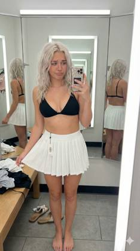
{
"subject": {
"age": "early 20s",
"description": "Young woman in a retail fitting room taking a mirror selfie while trying on an ultra-mini white tennis skirt with her own black bikini top.",
"expression": {
"eyes": "big doe eyes, soft questioning look toward phone",
"mouth": "soft pout, slight lip bite",
"brows": "slightly raised, uncertain",
"overall": "innocent 'is this too short?' expression"
},
"hair": {
"color": "platinum blonde",
"style": "soft waves, slightly messy",
"details": "some behind ear, some framing face"
},
"body": {
"frame": "petite",
"waist": "tiny",
"chest": "full, emphasized by bikini top",
"hips": "soft curves",
"legs": "toned, long",
"skin": "pale porcelain"
},
"pose": {
"stance": "one leg forward, hip popped",
"arms": {
"phone_arm": "taking selfie",
"other_arm": "tugging skirt hem downward"
},
"head": "slight tilt, looking at phone"
},
"clothing": {
"top": {
"type": "black triangle bikini top",
"ownership": "hers",
"fit": "tight, supportive",
"detail": "no tag"
},
"skirt": {
"type": "white pleated tennis skirt",
"length": "ultra mini",
"fit": "high-waisted, very short",
"tag": "visible on waistband"
},
"underneath": "possible glimpse of matching black bottom",
"feet": "bare, sandals on floor"
}
},
"environment": {
"location": "retail fitting room",
"mirrors": "front + side reflections",
"props": "bench with her clothes, hooks, bag, shoes",
"lighting": "bright fitting room lights"
},
"photography": {
"type": "mirror selfie",
"framing": "mid-thigh to head, close crop",
"device": "iPhone",
"aspect_ratio": "9:16"
},
"theme": {
"contrast": "black bikini top + white skirt",
"vibe": "intimate, casual, authentic fitting room moment",
"question": "'Is this too short?'",
"motifs": ["hem tug", "visible tag", "beach-girl shopping"]
},
"critical_elements": {
"bikini_top_hers": true,
"skirt_tag_visible": true,
"hem_tug_focus": true,
"bare_midriff": true,
"bare_feet": true
}
}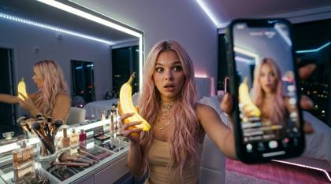
24-year-old blonde influencer filming TikTok selfie, handheld phone foreground, luxury high-rise bedroom, mirror reflection, ring light catchlights in eyes, LED strip glow, cluttered vanity textures, wide-angle distortion, shallow depth, candid framing
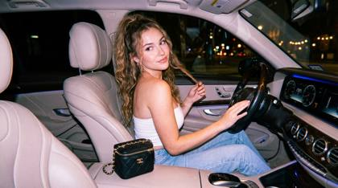
{ "project_constraints": { "facial_rendering": "100% original facial features (Do not edit the face)", "resolution": "1200x1200px", "output_quality": "Photo-realistic, 8K resolution" }, "camera_and_style": { "device_emulation": "Y2k-era digital camera (Canon IXUS / Sony Cyber-shot)", "perspective": "Low-angle, shot from behind at a 3/4 angle", "visual_aesthetic": "Cinematic, nostalgic", "post_processing": { "grain": "Thin film grain", "depth_of_field": "Shallow", "color_grading": "Bright overall tone with a slight pinkish-purple hue" } }, "subject_details": { "demographics": "Beautiful young woman", "physique": "Hourglass figure, fair dewy skin", "hair": "Long, wavy, thick milk-brown hair, spiral curls reaching waist", "makeup": { "base": "Light brown nude", "eyes": "Aussie eyeliner", "finish": "Glossy cheek and lip color" }, "nails": "Long, polished in shiny wine red" }, "pose_and_action": { "position": "Sitting sideways in passenger seat", "hands": "Right hand gripping steering wheel, left hand lifting hair up", "expression": "Looking back over shoulder, seductive and confident" }, "fashion_and_accessories": { "top": "Shiny white tube top with open back and delicate crisscross detail", "bottom": "Light blue high-waisted jeans (fitted)", "jewelry": "Several gold rings, matching bracelet", "bag": "Small Chanel Vanity bag with black gold chain (on armrest)" }, "environment": { "location": "Interior of luxury SUV (Mercedes-Benz style)", "interior_elements": "Wooden trim, light beige leather seats", "time_of_day": "Night" }, "lighting": { "technique": "Direct flash photography", "sources": [ "Soft warm interior lighting", "Cool blue dashboard light", "City light bokeh through windows" ], "characteristics": "High contrast, pronounced flash shadows, realistic cinematic lighting" }}@cherryglowshot of a modern podcast studio, 24-year-old woman host with sleek blonde high ponytail and sitting across from a 25 year old beautiful Asian woman with jet black straight hair, professional studio table, microphones, slat modern industrail background, Shot on Sony A7S III, 85mm G Master f/1.2 lens, 4k UHD, crisp focus, studio controlled lighting, rim light, hair light, softbox key light, depth of field, bokeh background, color graded, ultra-detailed skin texture, subsurface scattering, acoustically treated room, clean composition, Shure SM7B microphone, high fidelity, YouTube 4k, stills archive.
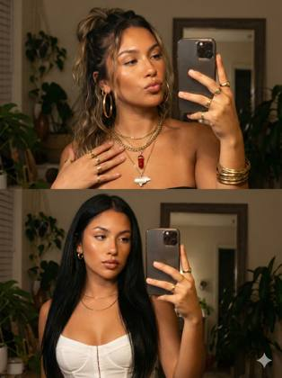
{
"image_prompt_structure": {
"meta_settings": {
"aspect_ratio": "3:4",
"reference_image_mode": "img2img",
"reference_strength": "High (Do not change physical features)"
},
"subject_core": {
"demographics": "Young woman",
"pose": {
"angle": "Selfie, slightly elevated",
"head_position": "Slightly tilted",
"eye_contact": "Directly at camera"
},
"expression": {
"mood": "Confident, sensual",
"mouth": "Lips pursed in a thin pout (blowing a kiss)"
},
"facial_details": {
"skin": "Flawless, sun-kissed, soft blush (cheeks, nose, forehead), clean contouring, subtle texture",
"eyes": "Emphasized, long natural lashes, perfectly defined eyebrows",
"lips": "Full, glossy, warm nude tones"
},
"nails": "Long, almond-shaped, neutral-toned"
},
"styling_variants": [
{
"id": "variant_1_boho_glam",
"hair": "Dark blonde, long, wavy, voluminous, extra messy half-up, loose strands framing cheeks",
"jewelry": {
"necklaces": "Four layered chunky gold necklaces (one carnelian crystal pendant, one Honduras map w/ flag)",
"earrings": "Extremely large gold hoops",
"wrists": "Three gold bangles",
"fingers": "Chunky gold rings on every finger",
"face": "Visible nose piercing"
}
},
{
"id": "variant_2_sleek_y2k",
"hair": "Very long, sleek, dark black straight, elegant, two strands framing face",
"jewelry": {
"necklaces": "Thin gold chain",
"earrings": "Small gold hoops"
},
"apparel": {
"top": "White corset-style top, straps crossing along rib area",
"bottom": "Light shabby jeans (partially visible)"
}
}
],
"environment": {
"setting": "Dark, softly blurred",
"elements": [
"Large mirror in background (non-distracting)",
"Green plants"
]
},
"cinematography": {
"lighting": "Warm soft flash, early-2000s shine, warm golden highlights",
"effects": "Soft skin glow, slightly saturated colors, fine glossy effect (lips/skin), shallow depth of field (bokeh)",
"style_genre": "Y2K glamour, retro nighttime, luxurious, celebrity selfie"
}
}
}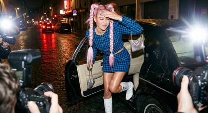
{
"subject": {
"description": "Full-body shot of a 24-year-old model stepping out of a black luxury car at night, blinded by camera flashes, Vogue 'Street Style' aesthetic",
"pose": "one leg extended out of the car door, head turned away shielding eyes but looking chic",
"age": "24",
"expression": {
"eyes": "blue eyes catching the light (red-eye reduction pre-flash look), squinting elegantly",
"mouth": "smirking, caught mid-movement",
"overall": "chaotic glamour, 'it girl' energy"
},
"hair": {
"color": "bubblegum pink",
"style": "long braided pigtails with silver ribbons woven in",
"movement": "swinging dynamically, motion blur on the tips"
},
"body": {
"skin": "oiled legs reflecting the streetlights and flash",
"hands": "manicured hand (chrome nails) held up to block the flash"
},
"clothing": {
"outfit": {
"type": "vintage Chanel tweed set reworked with safety pins",
"color": "electric blue and black houndstooth",
"texture": "rough wool texture vs. smooth cold metal pins",
"fit": "micro-mini skirt, cropped jacket"
},
"shoes": {
"type": "knee-high white patent leather boots",
"detail": "scuff mark on the heel (realism)"
}
}
},
"accessories": {
"bag": {
"type": "tiny micro-bag",
"material": "silver chainmail",
"physics": "swinging from wrist"
},
"car": {
"part": "open door of a vintage Rolls Royce",
"interior": "creamy beige leather visible behind her"
}
},
"photography": {
"camera_style": "Direct On-Camera Flash (Juergen Teller style)",
"quality": "harsh shadows, high contrast, saturated colors",
"lighting": "hard frontal flash + ambient neon city lights in bokeh",
"imperfections": "lens flare/starbursts from the jewelry, slight motion blur on the hand",
"film_stock": "Kodak Portra 800 (pushed)"
},
"background": {
"setting": "Parisian Street at Night (Fashion Week)",
"elements": [
"wet cobblestones reflecting red taillights",
"blur of paparazzi cameras in the foreground (out of focus)",
"rain-slicked pavement"
],
"atmosphere": "loud, frantic, expensive",
"vibe": {
"energy": "exclusive access",
"contrast": "childlike pigtails vs. adult luxury nightlife",
"mood": "the afterparty",
"critical_elements": {
"hard_flash_shadows": true,
"motion_blur": true
}
}
}
}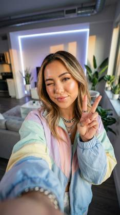
{
"main_subject": "Stunning 24-year-old Gen Z social media icon, flawless skin texture with sub-surface scattering, trendy balayage hairstyle, wearing high-fashion streetwear, expressive eyes with detailed irises",
"pose_composition": "Dynamic high-angle selfie arm extension, engaging directly with the lens, playful expression, hand making a peace sign, energetic vibe",
"camera_framing": "Front-facing wide-angle lens simulation, shallow depth of field (bokeh), focus locked on eyes, slight barrel distortion characteristic of smartphone optics",
"lighting_color_palette": "Professional ring-light illumination, soft catchlights, vibrant neon and pastel accents, high-key exposure, golden hour rim light",
"environment_background": "Aesthetically pleasing modern loft, blurred LED strip lights in background, minimalist decor, depth cues",
"artistic_style": "Hyper-realistic 8k photography, cinematic color grading, sharp focus, viral aesthetic, ultra-high definition",
"nano_secret_tokens": "Nano-detail, 8k crisp, sub-surface scattering, rule of thirds, diffraction spikes, f/1.8 aperture, insane detail, pure textures, volumetric lighting, ray-traced reflections, chromatic aberration"
}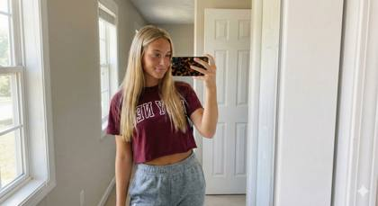
{
"subject": {
"type": "Young woman",
"appearance": {
"hair": "Long blonde hair, center part, straight texture",
"eyes": "Blue-green",
"skin": "Sun-kissed, tan, visible freckles across nose and cheeks",
"expression": "Soft smile, relaxed, confident"
}
},
"attire": {
"top": {
"type": "Cropped t-shirt",
"color": "Maroon / Burgundy",
"graphic": "White varsity-style text lettering across chest"
},
"bottom": {
"type": "Sweatpants",
"color": "Heather grey",
"fit": "High-waisted, loose fit, elastic waistband"
},
"style": "Casual loungewear, athleisure"
},
"pose_and_action": {
"pose": "Standing, facing mirror",
"action": "Taking a mirror selfie with right hand",
"framing": "Upper body and torso focus"
},
"props": {
"smartphone": {
"case_pattern": "Tortoise shell / Leopard print",
"brand_aesthetic": "iPhone style"
}
},
"environment": {
"location": "Indoor, residential bedroom or hallway",
"background": "White paneled door, neutral light grey walls, white trim, beige carpet",
"lighting": "Natural daylight coming from window on the left, soft shadows"
},
"image_style": {
"medium": "Photography",
"aesthetic": "Social media influencer, candid, realistic, high quality"
}
}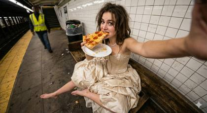
{
"subject": {
"description": "Young woman in a ballgown sitting on a subway platform bench eating a greasy slice of pizza, looking directly at camera (selfie arm extended)",
"mirror_rules": "front-facing camera (no mirror), high angle looking down at herself",
"age": "early 20s",
"expression": {
"eyes": "looking up at lens, playful/defiant",
"mouth": "taking a bite of pizza, cheese string visible",
"overall": "unbothered, hungry, breaking character"
},
"hair": {
"style": "messy, windblown from the train arrival",
"texture": "slightly frizzy/humid texture"
},
"body": {
"pose": "sitting with legs sprawled open casually (manspreading) in a dress",
"feet": "bare feet resting on the dirty concrete platform"
},
"clothing": {
"gown": {
"type": "voluminous champagne silk ballgown",
"fit": "corset top pushing up chest, skirt pooled around her like a cloud",
"material": "smooth satin/silk, wrinkles visible where she is sitting",
"dirt": "visible gray smudges on the hem where it touches the ground"
}
}
},
"accessories": {
"food": {
"item": "NYC dollar slice pizza on a paper plate",
"detail": "grease stain on the paper plate, pepperoni curving up",
"physics": "cheese stretching slightly"
},
"jewelry": "massive diamond necklace reflecting the platform lights"
},
"photography": {
"camera_style": "casual wide angle (0.5x) selfie",
"quality": "high contrast, sharp center, distorted edges",
"lighting": "harsh, yellow-tinted platform lighting",
"angle": "high angle, capturing the cleavage, the pizza, and the bare feet in one frame"
},
"background": {
"setting": "Subway Platform (14th St station vibes)",
"elements": [
"white subway tile walls with grime in grout [cite: 71]",
"trash can overflowing in background",
"yellow safety strip on platform edge",
"rat (optional blur in corner)"
],
"atmosphere": "smells like stale air, visual noise",
"vibe_contrast": "gourmet aesthetic vs. street food reality"
},
"vibe": {
"energy": "post-gala hunger",
"contrast": "silk + concrete + grease",
"mood": "authentic, chaotic, relatable",
"caption_energy": "dinner served 🍕"
}
}a young 24 year old woman, blonde hair with blue eyes sitting on a chair facing away from the camera, watching multiple computer screens filled with YouTube trading videos, the YouTube logo glowing clearly on one of the screens, colorful thumbnails with titles like "Secret Strategy," "100% Win Rate," and "Trading Made Easy," dimly lit room with blue and red monitor light reflecting on his face, cluttered desk with notes and coffee cup, representing information overload and naive confidence, cinematic lighting, realistic photo style, shallow depth of field, 35mm lens,
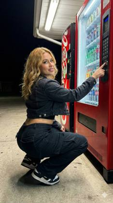
{
"meta": {
"aspect_ratio": "9:16",
"quality": "ultra_photorealistic",
"resolution": "8k",
"camera": "iPhone 15 Pro Max",
"lens": "24mm wide",
"style": "flash-lit nightlife realism, natural skin texture, social media aesthetic"
},
"scene": {
"location": "outdoor vending machine area",
"environment": [
"classic red soda vending machine",
"brightly lit drink display behind glass",
"concrete ground with slight texture",
"nighttime urban setting"
],
"time": "night",
"atmosphere": "flash photography vibe, playful, spontaneous, slightly cheeky street energy"
},
"lighting": {
"type": "direct phone flash",
"key_light": "strong frontal flash",
"fill_light": "vending machine internal lights",
"effect": "sharp highlights on skin, clear shadows, glossy nightlife look"
},
"camera_perspective": {
"pov": "third-person shot (taken by friend)",
"angle": "slightly low angle",
"framing": "full body",
"distance": "about 1.5–2 meters",
"motion": "frozen candid moment"
},
"subject": {
"gender": "female",
"age": "early 20s (clearly adult)",
"ethnicity": "European / Mediterranean blend",
"body": {
"type": "curvy-slim",
"waist": "defined",
"hips": "full and round",
"legs": "toned",
"posture": "confident, playful"
},
"hair": {
"color": "warm blonde",
"length": "long",
"style": "loose waves",
"details": "soft shine from flash"
},
"face": {
"expression": "over-the-shoulder confident look",
"eyes": "direct eye contact with camera",
"makeup": "night-out glam, glossy lips",
"skin": "realistic texture, slight flash sheen"
},
"pose": {
"position": "deep squat in front of vending machine",
"legs": "knees bent, heels down",
"hips": "pushed back",
"upper_body": "torso twisted slightly toward camera",
"arms": {
"one_hand": "pressing vending machine buttons",
"other_hand": "resting naturally on thigh"
},
"head": "turned back over shoulder"
},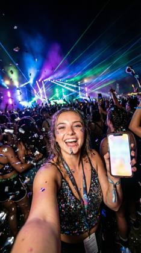
A dynamic, high-energy selfie taken in the front row of a massive music festival main stage. The background is a blur of stage lights, lasers, and a cheering crowd. Foreground: A shower of metallic confetti is falling around her. The 24-year-old influencer is laughing, looking at the camera. Details: The camera has frozen the motion of the confetti perfectly. Visible glitter makeup on her cheeks, a slight sheen of sweat on her forehead, and individual strands of hair sticking to her lip gloss. Vibrant, saturated colors. Shot on wide-angle lens, 16mm, flash on
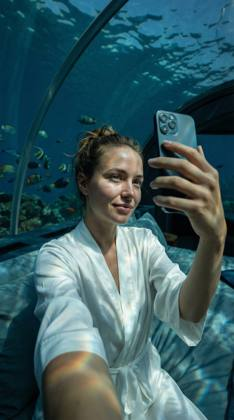
A surreal, ultra-sharp selfie taken inside an underwater hotel room (like The Muraka). Through the thick curved glass behind her, tropical fish and blue water are visible. Lighting: Caustic water patterns cast dancing shadows across her face and upper body. The 24-year-old influencer is wearing a white silk robe. Details: The image is crystal clear. Visible pores, perfect skin texture, and the distortion of light through the thick glass. The color palette is deep aquamarine and soft skin tones. Shot on Leica Q2, f/1.7
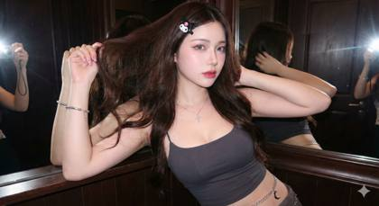
{
"subject": {
"type": "24 year old woman",
"face": {
"unchanged": true,
"details": "100% original"
},
"hair": {
"length": "long",
"texture": "soft, gently wavy",
"color": "dark brown",
"accessory": "Sanrio Kuromi hair clip"
},
"clothing": {
"top": {
"type": "spaghetti strap crop top",
"color": "dark gray"
},
"accessories": [
{
"type": "silver chain waist belt",
"charm": "dangling crescent moon"
},
{
"type": "silver bracelet"
},
{
"type": "silver necklace",
"pendant": "minimalist cross"
}
]
},
"body": {
"figure": "enhanced curves and waistline with sharp definition",
"skin": {
"tone": "fair with pinkish hue",
"texture": "smooth, slightly rosy"
}
},
"eyes": {
"color": "grayish-blue",
"contacts": true
},
"makeup": {
"eyeshadow": "soft pink",
"eyeliner": "fine, sharp",
"lashes": "long",
"lips": "pink-red gloss"
},
"nails": {
"color": "clear pink glitter"
},
"pose": {
"style": "leaning sideways, hair lifted playfully",
"hand": "raised slightly"
}
},
"environment": {
"location": "bathroom",
"walls": "dark wooden",
"mirror": {
"reflection": "faint reflection of model",
"extra": "another woman's hand taking photo"
}
},
"camera": {
"model": "Canon IXY/IXUS",
"flash": "strong front flash",
"lighting_effect": "illuminates face, glowing skin, shadow highlights"
},
"style": {
"aesthetic": ["Y2K Digital Aesthetic", "Cyber Ulzzang", "Retro Japan–Korea"]
}
}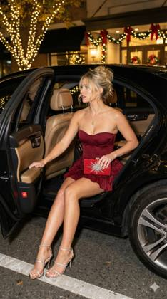
{
"image_description": {
"aspect_ratio": "9:16",
"subject": {
"gender": "Female",
"hair": {
"color": "Blonde",
"style": "Messy updo/bun with loose tendrils framing the face"
},
"attire": {
"dress": {
"color": "Dark red / Burgundy",
"style": "Strapless corset mini dress",
"details": [
"Structured bodice with boning",
"Ruffled, tiered mini skirt"
]
},
"footwear": {
"type": "High-heeled sandals",
"color": "Silver / Metallic",
"details": "Strappy design with rhinestone embellishments"
},
"accessories": {
"necklace": "Thin gold chain with a circular pendant",
"clutch": "Red rectangular clutch with a large, sparkling silver starburst embellishment"
}
},
"pose": "Sitting on the edge of the back seat of a car, legs extended out, one hand holding the car door and the other holding a clutch, looking to her left"
},
"setting": {
"location": "Outdoors at night, seemingly in front of an upscale venue or hotel",
"vehicle": {
"color": "Black",
"type": "Luxury sedan",
"details": [
"Open rear passenger door",
"Tan leather interior visible",
"Silver alloy wheel visible"
]
},
"background": {
"lighting": "Warm, festive bokeh lights",
"decor": [
"Trees wrapped in string lights",
"Garlands with red bows visible on a building entrance"
],
"atmosphere": "Glamorous, evening, holiday or festive season"
}
},
"technical_aspects": {
"lighting": "Artificial, likely flash photography mixed with ambient warm street/holiday lights",
"angle": "Eye-level, slightly low angle emphasizing the legs and shoes",
"focus": "Sharp focus on the subject, soft background blur"
}
}
}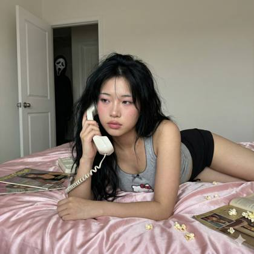
{
"meta": {
"width": 1200,
"height": 1200,
"aspect_ratio": "1:1",
"version": "1.0"
},
"scene_composition": {
"subject": {
"demographics": "Young woman, unspecified ethnicity",
"physical_attributes": {
"hair": "Long black hair, natural texture, slight messy volume",
"skin": "Natural realistic texture, visible pores and minor imperfections, non-airbrushed",
"makeup": {
"style": "Soft glam, pink tones",
"details": [
"smooth blush",
"soft eyeliner",
"defined lashes",
"natural glossy lips"
]
}
},
"pose": {
"body": "Lying on stomach on bed, upper body propped on forearms",
"head": "Tilted slightly to the side",
"expression": "Soft, calm, relaxed gaze",
"action": "Holding vintage handset phone to ear"
}
},
"wardrobe": {
"aesthetic": "Cute homewear / pajama style",
"items": {
"top": "Grey Hello Kitty tank top, small frill trim, bow detail",
"bottom": "Black Hello Kitty shorts, pink drawstring, printed graphic"
}
},
"environment": {
"foreground": {
"location": "Bed",
"textiles": "Soft pink satin sheets and pillows, slightly wrinkled",
"scatter_items": [
"Vintage magazines",
"Popcorn pieces"
],
"props": "Vintage-style white handheld telephone with coiled cord"
},
"background": {
"walls": "Soft light pink",
"decor": "Retro posters",
"architectural": "White door, partially open",
"narrative_element": "Dark figure wearing a Scream mask standing in the open doorway",
"ambience": "Darker hallway behind the door creating contrast"
}
}
},
"technical_specifications": {
"camera_gear": "iPhone 16 Pro Max emulation",
"lens_perspective": "Front-facing or close-range low angle",
"lighting": {
"type": "Natural indoor ambient",
"quality": "Soft, even illumination on subject",
"shadows": "Natural, no harsh flash"
},
"visual_style": {
"quality": "Slightly soft realism, not HD, phone photography aesthetic",
"processing": "Unedited look, raw feel, natural color profile",
"filters": "None"
}
},
"generated_prompt_string": "A realistic phone photo of a young woman lying on her stomach on a bed with pink satin sheets, wearing a grey Hello Kitty tank top and black shorts. She is holding a white vintage telephone to her ear. Messy long black hair, soft pink makeup, natural skin texture. The bed is scattered with magazines and popcorn. In the background, an open door reveals a dark figure wearing a Scream mask standing in the shadows. Shot on iPhone 16 Pro Max, flash off, soft natural lighting, low angle, unedited aesthetic."
}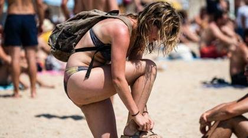
A candid paparazzi beach shot of a beautiful 24 year old woman emphasizing real skin tone variation—tan lines visible at straps, subtle redness on shoulders, paler underarms. The subject bends slightly, posture unflattering but natural. Midday sun exaggerates texture and contrast. Shadows are sharp and unforgiving. The moment feels stolen, not styled.
a young 24 year old woman, blonde hair with blue eyes sitting on a chair facing away from the camera, watching multiple computer screens filled with YouTube trading videos, the YouTube logo glowing clearly on one of the screens, colorful thumbnails with titles like "Secret Strategy," "100% Win Rate," and "Trading Made Easy," dimly lit room with blue and red monitor light reflecting on his face, cluttered desk with notes and coffee cup, representing information overload and naive confidence, cinematic lighting, realistic photo style, shallow depth of field, 35mm lens,
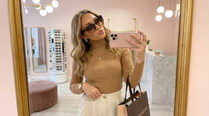
{
"subject": {
"description": "A young woman taking a mirror selfie while trying on oversized sunglasses in a boutique, tilting head playfully to show off the frames",
"mirror_rules": "ignore mirror physics for store signage and text, display forward and legible",
"age": "mid-20s",
"expression": "playful pout, head tilted, eyebrows raised behind sunglasses",
"hair": {
"color": "honey blonde with balayage",
"style": "beach waves, tucked behind one ear, volumized"
},
"clothing": {
"top": {
"type": "fitted turtleneck",
"color": "camel tan",
"details": "long sleeves, ribbed knit texture, tucked in"
},
"bottom": {
"type": "high-waisted trousers",
"color": "cream white",
"details": "wide leg, pleated front, gold button visible"
}
},
"face": {
"preserve_original": true,
"makeup": "glowing skin, nude matte lips, bronzed cheeks, mascara"
}
},
"accessories": {
"headwear": {
"type": "oversized sunglasses being tried on",
"details": "tortoiseshell cat-eye frames, gradient brown lenses, gold accents"
},
"jewelry": {
"earrings": "gold huggie hoops",
"necklace": "delicate gold pendant necklace",
"wrist": "gold watch with leather strap, thin gold bangles",
"rings": "two gold stackable rings"
},
"device": {
"type": "smartphone",
"details": "rose gold iPhone with clear case, held up for mirror selfie"
},
"prop": {
"type": "shopping bag",
"details": "designer boutique bag hanging on arm, tissue paper visible"
}
},
"photography": {
"camera_style": "smartphone mirror selfie, shopping try-on aesthetic",
"angle": "slightly above eye level, mirror reflection",
"shot_type": "upper body and face focus, subject positioned center-left",
"aspect_ratio": "9:16 vertical",
"texture": "bright retail lighting, sharp focus, polished storefront quality"
},
"background": {
"setting": "upscale boutique fitting area",
"wall_color": "soft blush pink",
"elements": [
"full-length ornate gold-framed mirror",
"rotating sunglasses display rack visible in reflection",
"plush velvet ottoman in corner",
"modern pendant light fixture overhead",
"marble countertop with accessories",
"potted fiddle leaf fig plant"
],
"atmosphere": "chic, retail therapy, fashion-forward",
"lighting": "bright LED boutique lighting, warm and flattering"
}
} @cherryglow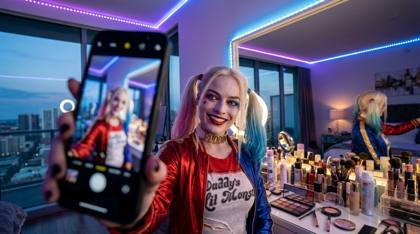
24-year-old blonde influencer filming TikTok selfie, handheld phone foreground, luxury high-rise bedroom, mirror reflection, ring light catchlights in eyes, LED strip glow, cluttered vanity textures, wide-angle distortion, shallow depth, candid framing
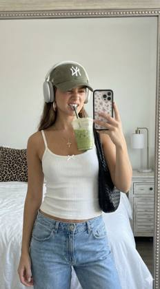
{
"subject": {
"description": "A young woman taking a mirror selfie, playfully biting the straw of an iced green drink",
"mirror_rules": "ignore mirror physics for text on clothing, display text forward and legible to viewer, no extra characters",
"age": "young adult",
"expression": "playful, nose scrunched, biting straw",
"hair": {
"color": "brown",
"style": "long straight hair falling over shoulders"
},
"clothing": {
"top": {
"type": "ribbed knit cami top",
"color": "white",
"details": "cropped fit, thin straps, small dainty bow at neckline"
},
"bottom": {
"type": "denim jeans",
"color": "light wash blue",
"details": "relaxed fit, visible button fly"
}
},
"face": {
"preserve_original": true,
"makeup": "natural sunkissed look, glowing skin, nude glossy lips"
}
},
"accessories": {
"headwear": {
"type": "olive green baseball cap",
"details": "white NY logo embroidery, silver over-ear headphones worn over the cap"
},
"jewelry": {
"earrings": "large gold hoop earrings",
"necklace": "thin gold chain with cross pendant",
"wrist": "gold bangles and bracelets mixed",
"rings": "multiple gold rings"
},
"device": {
"type": "smartphone",
"details": "white case with pink floral pattern"
},
"prop": {
"type": "iced beverage",
"details": "plastic cup with iced matcha latte and green straw"
}
},
"photography": {
"camera_style": "smartphone mirror selfie aesthetic",
"angle": "eye-level mirror reflection",
"shot_type": "waist-up composition, subject positioned on the right side of the frame",
“aspect_ratio”: “9:16 vertical”,
"texture": "sharp focus, natural indoor lighting, social media realism, clean details"
},
"background": {
"setting": "bright casual bedroom",
"wall_color": "plain white",
"elements": [
"bed with white textured duvet",
"black woven shoulder bag lying on bed",
"leopard print throw pillow",
"distressed white vintage nightstand",
"modern bedside lamp with white shade"
],
"atmosphere": "casual lifestyle, cozy, spontaneous",
"lighting": "soft natural daylight"
}
}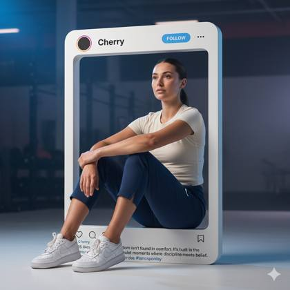
{
"prompt": "Create a hyper-realistic, cinematic Instagram post layout where the Instagram UI exists as a physical, tangible 3D object, photographed like a premium commercial product shot. The result should feel indistinguishable from a real studio photograph.\n\nInstagram Frame (UI Accuracy – Critical):\n- Authentic Instagram interface rendered as a solid white physical 3D card\n- Smooth matte plastic surface with subtle micro-texture\n- Slight thickness visible on edges, realistic bevels\n- Perfectly rounded corners (exact Instagram radius)\n- Soft studio reflections and realistic edge highlights\n\nTop Bar (Pixel-accurate UI):\n- Circular profile avatar on the left\n- Username text: \"Cherry\" in Instagram’s default bold UI font\n- Light blue FOLLOW button with correct proportions\n- Three-dot menu icon aligned to the far right\n- Exact spacing, typography, and icon sizing matching the real Instagram app\n- Aspect ratio 1:1, centered, balanced, premium composition\n\nMain Subject (Pose – Match Reference Image Exactly):\n- A photorealistic athletic woman partially emerging out of the Instagram frame into real 3D space\n- Seated pose:\n - Both legs bent and angled to the side\n - One knee slightly raised and closer to the chest\n - Arms gently wrapped around the raised knee\n - Hands relaxed, fingers naturally resting\n - Torso leaning slightly back against the frame edge\n- Expression: calm, thoughtful, self-assured\n- Gaze: looking slightly to the side and upward, not engaging the camera\n- Natural body proportions, relaxed posture, editorial realism\n- No exaggerated curves, no artificial posing\n\nClothing (Nike Only – Realistic Fit):\n- Muted ivory/off-white Nike fitted short-sleeve blouse\n - Visible white Nike swoosh\n - Natural fabric stretch and tension\n- Deep blue Nike athletic pants, length up to the knee\n - Tailored performance-fit silhouette\n - Realistic fabric weight with subtle folds at the knee bend\n - Clean stitching and breathable sports material\n- Clean white Nike sneakers\n - Slight wear realism\n - Correct sole texture and stitching\n- Premium sportswear look, real commercial styling\n- No distortion, no fantasy fashion\n\nBackground (Inside the Instagram Post Only):\n- Dark indoor gym or studio environment\n- Cool blue and muted purple cinematic lighting\n- Soft haze in the background\n- Subtle volumetric light beams barely visible\n- Shallow depth of field, background softly blurred\n- Subject and Instagram frame remain sharp and dominant\n\nLighting & Photorealism:\n- Studio-grade cinematic lighting\n- Soft key light illuminating the subject naturally\n- Gentle rim light outlining the body and Instagram frame\n- Realistic skin texture with visible pores and natural highlights\n- Accurate contact shadows where the subject touches the frame\n- Physically correct light falloff and reflections\n\nFooter UI (Engagement Section):\n- Instagram action icons: like, comment, share, save (accurate icons)\n- Text visible: \"785 likes\"\n- Caption begins with \"Cherry\"\n- Caption text:\n \"Freedom isn’t found in comfort. It’s built in the quiet moments where discipline meets belief.\"\n- Hashtags partially visible and naturally cropped\n\nOverall Style & Quality:\n- Ultra-high resolution\n- Advertising-grade realism\n- Clean, modern, editorial Instagram aesthetic\n- Hyper-realistic blend of 3D object + real photography\n- No extra elements\n- No text errors\n- No distortion\n- Looks like a real product photoshoot, not AI art"
}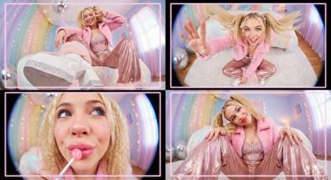
{
"meta_control": {
"generation_mode": "multi_panel_consistent",
"priority_stack": ["identity_lock", "perspective_physics", "material_fidelity", "environmental_coherence"],
"quality_target": "editorial_print_ready"
},
"intent": {
"primary": "Y2K Kawaii-fashion editorial with extreme wide-angle perspective study",
"secondary": "Technical demonstration of foreshortening in a hyper-feminine aesthetic",
"publication_context": "Double-page spread, pop-culture magazine collage layout"
},
"frame": {
"aspect_ratio": "9:16",
"layout": {
"type": "2x2 grid collage",
"gutter_width": "2px pink or seamless",
"panel_uniformity": "identical dimensions per panel"
}
},
"subject": {
"type": "Human female fashion model",
"identity_lock": {
"enforcement_level": "strict",
"anchor_features": ["face_geometry", "skin_tone", "body_proportions", "hair_color"]
},
"biometrics": {
"age_presentation": "20-24",
"height_cm": 170,
"build": "Slender, petite model frame",
"ethnicity_presentation": "Caucasian / Northern European features"
},
"facial_signature": {
"structure": "Soft oval face shape, full cheeks, rounded feminine jawline",
"eyes": "Large, expressive, bright blue, defined lashes with rhinestone accents",
"nose": "Small, delicate button nose, slightly upturned",
"lips": "Very full, plush and pillowy, glossy bubblegum pink",
"skin": "Porcelain fair, smooth texture, heavy blush on nose and cheeks, highlighter glow",
"expression_default": "Playful cute, duck face, winking, blowing kiss"
},
"hair": {
"style": "Long golden blonde hair, half-up pigtails with fluffy scrunchies",
"texture": "Silky, voluminous, crimped sections",
"behavior": "Bouncing, dynamic movement"
},
"wardrobe": {
"jacket": {
"item": "Cropped faux-fur jacket",
"material": "High-pile mongolian fur",
"color": "Pastel baby pink",
"state": "Slouched off shoulders",
"light_behavior": "Soft diffusion, halo effect on fur tips"
},
"top": {
"item": "Heart-shaped corset top",
"material": "Satin with all-over rhinestone coverage",
"color": "Hot pink",
"fit": "Structured, push-up",
"details": "Crystal straps, glitter trim"
},
"pants": {
"item": "Wide-leg parachute pants",
"material": "Iridescent nylon fabric",
"color": "Metallic rose gold",
"details": "Drawstrings, butterfly patches, sequin pockets"
},
"footwear": {
"item": "Mega-platform boots",
"color": "White patent leather with glitter soles",
"condition": "Pristine, reflective",
"details": "Furry leg warmers attached"
}
},
"accessories": {
"neck": "Chunky plastic chain in pastel colors, 'BABY' rhinestone choker",
"hands": "Acrylic nails with 3D hello kitty charms, multiple resin rings",
"face": "Star-shaped face stickers on cheekbones"
}
},
"panels": [
{
"id": 1,
"position": "top-left",
"concept": "Extreme low-angle boot perspective",
"camera": {
"height_cm": 10,
"distance_cm": 35,
"angle": "Looking up at 75 degrees"
},
"composition": {
"foreground_dominant": "Platform boot sole filling 40% of frame, glitter texture sharp",
"midground": "Legs receding upward in shimmering pants",
"background": "Torso and face small in upper frame, looking down cute"
},
"subject_pose": "Standing, hip popped, one foot extended toward lens",
"expression": "Looking down, winking, peace sign near face"
},
{
"id": 2,
"position": "top-right",
"concept": "Bird's-eye reaching hand",
"camera": {
"height_cm": 200,
"distance_cm": 60,
"angle": "Looking straight down"
},
"composition": {
"foreground_dominant": "Hand reaching up, fingers spread, nail art clearly visible",
"midground": "Face looking up, pigtails fanned out",
"background": "Body compressed, plush rug visible around edges"
},
"subject_pose": "Sitting cross-legged, one arm reaching directly up to camera",
"expression": "Big smile, eyes wide, happy energy"
},
{
"id": 3,
"position": "bottom-left",
"concept": "Fisheye face extreme close-up",
"camera": {
"height_cm": 150,
"distance_cm": 20,
"angle": "Dutch tilt 20 degrees"
},
"composition": {
"foreground_dominant": "Face filling 70% of frame, glossy lips and nose enlarged",
"background": "Room warping and curving at edges, bokeh sparkles"
},
"subject_pose": "Leaning face toward camera, holding lollipop near mouth",
"expression": "Sassy pout, eyes looking up through lashes"
},
{
"id": 4,
"position": "bottom-right",
"concept": "Seated knee-forward perspective",
"camera": {
"height_cm": 40,
"distance_cm": 50,
"angle": "Slight upward looking"
},
"composition": {
"foreground_dominant": "Knees and shins large in frame, iridescent fabric texture detailed",
"midground": "Torso leaning forward",
"background": "Face in upper third, hands resting on knees"
},
"subject_pose": "Seated on floor, knees up, leaning toward camera",
"expression": "Sweet smile, head tilted to side"
}
],
"environment": {
"location_type": "Dreamy Y2K Bedroom Studio",
"surfaces": {
"ground": "White fluffy faux-fur rug, scattered glitter",
"walls": "Pastel lilac and pink gradient, disco ball reflections, fairy lights"
},
"atmosphere": "Magical, soft-focus, hyper-feminine, sparkling",
"consistency_rule": "Identical environment visible across all four panels"
},
"lighting": {
"source": "Studio softbox lighting + Ring light",
"quality": "Soft, wrap-around beauty light",
"direction": "Frontal and slightly above",
"shadow_character": "Soft, diffused, minimal shadows",
"color_temperature_kelvin": 5000,
"fill": "Pink and purple gel rim lights",
"specular_behavior": "Star-filter sparkles on jewelry, glossy lips, and sequins"
},
"camera_global": {
"lens": "Ultra-wide rectilinear, 12-14mm equivalent",
"aperture": "f/5.6",
"depth_of_field": "Deep but with creamy falloff in far background",
"distortion": "Barrel distortion, edge stretching, playful exaggeration",
"sensor": "Full-frame, high resolution"
},
"post_processing": {
"color_grade": {
"contrast": "Medium",
"saturation_subject": "Vibrant pinks and pastels",
"saturation_background": "Soft pastel palette",
"blacks": "Lifted, faded matte look",
"highlights": "Glowing, blooming"
},
"texture": "High polish, glossy finish, added sparkle overlay effect",
"film_treatment": "Clean digital look, no grain, 'Purikura' photo booth aesthetic"
},
"negative_constraints": {
"style_rejection": ["illustration", "anime", "cartoon", "painting", "drawing", "3d render", "dark", "gritty", "horror", "masculine", "military", "industrial", "dirty"],
"anatomical_rejection": ["extra fingers", "missing fingers", "fused fingers", "extra limbs", "anatomical errors", "broken joints", "impossible body positions"],
"consistency_rejection": ["face change between panels", "different person", "clothing change", "hair color change", "inconsistent skin tone", "different lighting between panels"],
"technical_rejection": ["blur", "low resolution", "jpeg artifacts", "noise", "watermark", "text", "logo", "signature", "dark shadows"],
"lens_rejection": ["telephoto compression", "portrait lens look", "85mm aesthetic", "no foreshortening", "flat perspective"]
}
}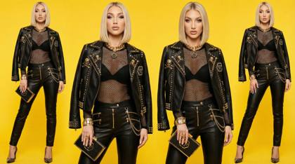
Authentic shots of top model on a bright yellow background, with exquisite details, mixed textures of black and gold. Showcasing high-end luxury fashion. Simple and crisp hairstyles, designer luxury brands. Philipp Plein style designs, stylish and high-end atmosphere
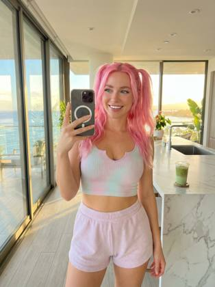
{
"subject": {
"description": "24-year-old TikTok influencer with vibrant pink hair in playful pigtails filming herself inside a luxury Hawaii penthouse during golden-hour.",
"age": "24",
"identity_rules": {
"preserve_identity": true,
"notes": "Maintain exact facial structure, blue eye color, natural skin texture, and real hair-strand definition. Zero plastic smoothing."
},
"expression": {
"eyes": "bright blue eyes, wide and energetic, soft upward sparkle from window light",
"mouth": "subtle glossy smile, relaxed lips with natural moisture sheen",
"brows": "soft raised brows amplifying playful influencer energy",
"overall": "confident yet cute 'recording content' expression"
},
"hair": {
"color": "vivid cotton-candy pink",
"style": "high twin pigtails with loose wisps around face",
"movement_texture": "realistic flyaways catching highlight rimlight from windows"
},
"body_details": {
"frame": "petite but toned",
"posture": "standing with slight hip shift, holding phone up toward face",
"accent_features": "natural waist curve, soft real skin texture on shoulders and arms"
},
"wardrobe": {
"top": {
"type": "cropped ribbed tank top",
"fit": "tight, contouring chest and midriff",
"fabric": "textured stretchy knit with visible weave",
"details": "soft pastel tone complementing pink hair"
},
"bottom": {
"type": "high-waisted lounge shorts",
"fit": "snug but relaxed luxury resort fit",
"fabric_behavior": "soft creases, natural tension around waistband",
"length": "mid-thigh"
},
"footwear": "barefoot on polished penthouse floors"
},
"props": {
"primary": "iPhone 17 Pro Max on selfie mode",
"secondary": "ring light behind camera, iced matcha on marble island"
}
},
"environment": {
"setting": "luxury penthouse suite overlooking the Hawaiian coastline",
"style": "modern, bright, premium resort aesthetic",
"elements": [
"floor-to-ceiling glass windows with ocean reflection",
"sunset rays entering diagonally creating warm rimlight",
"white marble kitchen island",
"high-end neutral furniture",
"soft shadows cast from tropical plants"
],
"atmosphere": "warm, airy, influencer-friendly golden-hour vibe",
"lighting": "natural golden-hour sunlight blended with soft indoor fill"
},
"photography": {
"camera_system": "iPhone 17 Pro Max, Apple ProRAW pipeline, Smart HDR 7, Deep Fusion",
"lens": "24mm main lens simulation",
"camera_style": "handheld selfie video frame, ultra-realistic mobile optics",
"angle": "slightly upward tilt toward face, classic influencer selfie angle",
"framing": "head, shoulders, partial torso; background penthouse view visible",
"texture": "authentic sensor noise, microcontrast detail, zero plastic skin smoothing",
"aspect_ratio": "9:16",
"meta_tokens": [
"REALISM_TOKENS++",
"NanoBananaPro.ULTRA_Realism",
"CAM_SIM:ProRAW-Engine",
"Optical_MicroContrast=true",
"ACEScg_ColorScience"
]
},
"scene_vibe": {
"energy": "fun, social, bubbly influencer charisma",
"mood": "Hawaii luxury lifestyle mixed with creator hustle",
"story_moment": "filming TikTok content while catching perfect golden-hour lighting",
"contrast_theme": "bright pink hair against warm golden penthouse light"
},
"quality": {
"resolution": "Ultra High Resolution",
"fidelity": "realistic skin pores, hair flyaways, fabric grain, window reflections",
"color_grade": "warm golden sunlight, deep ocean blues, clean HDR",
"sharpness": "super sharp crisp details on face and phone",
"rendering_notes": "retain natural imperfections and organic realism"
}
}
{
"image_layout": "2x2 grid collage featuring four distinct photographs of the same female subject.",
"subject_general": {
"gender": "Female",
"hair_color": "Dark brown/black",
"hair_style": "Long, styled in loose waves in three panels; sleek high ponytail in one panel",
"aesthetic": "Glamorous, influencer, trendy, luxury lifestyle"
},
"panels": [
{
"position": "top_left",
"setting": "Outdoors at night, dark background with illuminated green foliage",
"action": "Subject is holding a cake with one hand and licking frosting off the index finger of the other hand",
"outfit": {
"top": "Black halter-neck sleeveless top",
"jewelry": "Gold wristwatch, gold bangle bracelet, ring, small hoop earrings"
},
"props": {
"item": "Round white frosted cake",
"details": [
"Red cherries on top",
"Decorative white piping along edges",
"Black icing text reading 'bad bitch energy'"
]
}
},
{
"position": "top_right",
"setting": "Daytime city street, likely an upscale shopping district (e.g., Rodeo Drive) with palm trees and storefronts visible",
"action": "Subject is leaning out of the open door of a black luxury car, looking at the camera",
"outfit": {
"top": "White sleeveless ribbed crop top",
"bottom": "Blue denim jeans",
"accessories": "Shoulder bag (strap visible), gold hoop earrings"
},
"l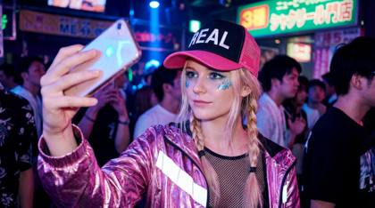
a PhaseOne IQ4 medium format RAW capture: 24 year old attractive blonde woman with pigtails, blue sparkling eyees, wearing a black and pink trucker hat with the word "REAL" on it, cyberpunk attire in pink, taking a selfie at a Tokyo nightclub
{
"meta": {
"project": "Blonde_PinkShorts_PS5_Room_Flux_V4.2",
"target_engine": "Flux.1 [dev] / Nano Banana Pro",
"version": "4.2.0 (Everything in Focus - f/11)",
"created_at": "2025-12-24T22:10:00Z"
},
"engine_configuration": {
"model": {
"base": "flux1-dev.safetensors",
"quantization": "fp8 / nf4",
"vae": "ae.safetensors"
},
"lora_slots": [
{
"name": "Realism_LoRA_v2 (Optional)",
"strength": 0.5,
"note": "Enhances skin tan glow, fabric stretch texture, and indoor daylight."
}
],
"sampling": {
"sampler_name": "euler",
"scheduler": "simple",
"steps": 28,
"guidance_scale": 2.5,
"shift": 1.0
},
"dimensions": {
"width": 1024,
"height": 1536,
"aspect_ratio": "2:3",
"megapixel_class": "1.5MP"
}
},
"prompt_construction": {
"narrative_layer": {
"style": "Influencer Lifestyle / Mirror Selfie",
"instruction": "Capture a sharp, full-body mirror selfie of a blonde woman in a living room, focusing on the pose and the background details like the PS5.",
"subject_flow": "A curvy tan blonde woman standing sideways in a floor mirror, making a kissy face, wearing pink shorts and a black tank top."
},
"texture_layer": {
"skin_physics": "light tan skin, smooth finish, natural makeup, kissy face expression",
"fabric_physics": "tight cotton texture of black tank top, elastic texture of light pink booty shorts",
"environment_physics": "SHARP DETAILS ON BACKGROUND: grey sofa fabric, white plastic PS5 console, black headphones, wood floor grain, glass mirror"
},
"camera_physics": {
"lens_imperfections": "smartphone camera aesthetic, soft natural light diffusion, sharp focus",
"focus": "DEEP DEPTH OF FIELD (f/11) - NO BLUR. The woman, the PS5, and the sofa are all sharp.",
"settings": "Smartphone Simulation, 24mm Lens, 1/100s, ISO 400 (Natural Window Light)"
},
"color_grading": {
"white_balance": "Neutral Daylight (Cozy/Warm)",
"shadows": "Soft shadows on floor and sofa",
"highlights": "Soft highlights on blonde hair and skin"
}
},
"final_prompt_string": "A candid raw mirror selfie photograph shot on Smartphone f/11. Deep depth of field, everything in focus. A curvy young woman (20-25) with light tan skin and long straight blonde hair standing sideways in a tall arched floor mirror. She is twisting her body to show her profile and making a playful kissy face. She wears a tight black sleeveless tank top and tight light pink booty shorts. She holds a black iPhone. Background is sharp and detailed: A modern living room with a grey sofa, a white media cabinet with a white PlayStation 5 console and black headphones, and a faux fireplace are clearly visible with no bokeh. Soft natural window lighting. Cozy influencer aesthetic.",
"negative_prompt_string": "",
"note_on_negative": "Flux ignores explicit negative prompts. Sharpness is ensured by positive descriptors like 'f/11' and 'deep depth of field'.",
"post_processing": {
"upscale": {
"enabled": true,
"method": "Magnific_AI_Style (Creativity: 1)"
},
"face_restoration": {
"enabled": false,
"warning": "CRITICAL: DISABLE FACE RESTORATION."
}
}
}{
"main_subject": "Stunning 24-year-old social media icon, flawless porcelain skin texture, mesmerizing gaze, prominent application of hyper-reflective sparkling pink glitter lip gloss, trendsetting Gen-Z aesthetic, intricate eyelashes",
"pose_composition": "Dynamic handheld selfie pose, charismatic head tilt, engaging eye contact with lens, casual confidence, arm extended for optimal angle",
"camera_framing": "Wide-angle smartphone perspective, shallow depth of field (bokeh), close-up portrait orientation focusing on lips and eyes",
"lighting_color_palette": "Professional ring light illumination, soft catchlights in eyes, vibrant magenta and pastel pinks, warm golden hour skin tones, high dynamic range",
"environment_background": "Softly blurred chic modern apartment interior, hints of neon LED strip lighting in background, contemporary decor",
"artistic_style": "Photorealistic 8k, viral photography style, beauty editorial standard, sharp focus, cinematic lighting",
"nano_secret_tokens": "Nano-detail, 8k crisp, sub-surface scattering, rule of thirds, diffraction spikes, f/1.8 aperture, insane detail, pure textures, ray-traced reflections, volumetric lighting, chromatic aberration"
}{
"subject": {
"description": "24-year-old fashion influencer caught mid-livestream while adjusting her top, an unguarded transitional moment between performative confidence and private self-awareness",
"age": 24,
"gender": "female",
"appearance": {
"hair": {
"color": "natural blonde",
"style": "loose with slight wave, imperfect parting, a few strands falling forward from repeated hand movement"
},
"eyes": {
"color": "blue",
"expression": "focused but slightly distracted, eyes flicking toward phone screen rather than lens"
},
"skin": {
"texture": "realistic skin texture with visible pores, faint under-eye creasing, slight shine from screen light"
}
},
"pose": {
"body_position": "standing close to phone camera, torso angled slightly, shoulders relaxed but not posed",
"hands": "one hand lifting and smoothing the hem of her top, fingers subtly tensed, fabric bunched unevenly"
},
"expression": {
"mouth": "neutral, lips softly pressed together as if concentrating",
"overall": "caught-between-moments authenticity, not performing for a still image"
}
},
"clothing": {
"top": {
"type": "soft ribbed crop top",
"fit": "snug but flexible, stretching naturally where fingers grip the fabric",
"behavior": "fabric folds and creases realistically under hand pressure, slight shadowing where material overlaps"
},
"bottom": {
"type": "high-waisted lounge shorts",
"material": "cotton blend with mild wrinkling from movement"
}
},
"environment": {
"location": "bedroom used as a casual livestream setup",
"background": {
"details": "unmade bed partially visible, neutral wall, soft clutter like a chair with clothes draped over it",
"depth": "background slightly out of focus due to shallow phone camera depth"
},
"time_of_day": "evening"
},
"photography": {
"capture_device": "iPhone front-facing camera",
"camera_logic": "handheld phone propped or held just below eye level during livestream",
"framing": "tight vertical framing, upper torso dominant, head slightly cropped at top edge",
"lens_behavior": "mild wide-angle distortion typical of front camera, subtle facial edge stretching"
},
"lighting": {
"primary_source": "phone screen light illuminating face evenly but flat",
"secondary_sources": [
"warm bedside lamp casting soft side shadows",
"ambient room light filling background unevenly"
],
"falloff": "rapid falloff from face to background, darker corners of frame"
},
"image_character": {
"social_context": "image exists as a livestream frame grab, not intended as a polished photo",
"emotional_tone": "intimate, slightly intrusive, candid",
"imperfections": [
"minor motion blur in adjusting hand",
"uneven lighting on collarbone",
"compression artifacts consistent with livestream capture"
]
},
"realism_tokens": [
"front_camera_wide_distortion",
"screen_light_flattening",
"livestream_compression_noise",
"micro_motion_blur",
"fabric_tension_artifacts",
"natural_skin_variation"
],
"vibe": "unfiltered access, socially believable, feels like a moment viewers weren’t meant to freeze-frame"
}Create a full Instagram-style 3×3 grid feed composed of nine different portrait images, all featuring the person and the dog from the attached image. ensure that the middle photo is the same photo as the attached image, Ensure the person’s identity, facial structure, and style remain consistent across all nine posts. Each of the 9 images should present a unique concept, outfit, pose, and environment that fits a stylish, modern Instagram aesthetic. Include a mix of: – Lifestyle shots – Cinematic portraits – Fashion/streetwear scenes – Close-up beauty shots – Travel or outdoor vibes – Cozy indoor moments – Minimalist studio portraits Make every image hyperrealistic and shot as if with a professional camera: – Natural skin texture – Accurate lighting – Sharp details – Professional depth of field – High-quality color grading – Authentic expressions and posing Ensure all 9 images feel coherent as a feed: – Consistent character likeness – Similar visual tone and color palette – Aesthetic balance across the grid – Cinematic and modern photography style Final deliverable: a 3×3 Instagram grid layout of nine separate 3:4 ratio hyperrealistic portraits of the person from the attached photo.
A raw, screen-captured livestream still of a 24-year-old female influencer sitting on her unmade bed at night, frozen mid-reaction as something shocking happens off-camera. Her eyes are widened instinctively, mouth slightly open, expression unperformed. Heavy H.264 livestream compression, macro-blocking in shadow areas, banding in the dark walls. Ring light slightly off-axis causing uneven facial falloff, skin texture intact with visible pores, faint under-eye creasing. Phone camera glare reflects in her pupils. Pixel noise crawling in the shadows. Looks accidentally captured, not posed.
{
"intent": "Generate a realistic selfie in the bathroom mirror of a young Russian woman facing forward, showing specific text on her clothing.",
"frame": {
"composition": "Vertical reflection in the mirror",
"aspect_ratio": "9:16",
"shot_type": "Medium shot (from the thighs upward)",
"angle": "Eye level, direct and frontal",
"focal_point": "Subject's torso and face",
"framing_guide": "Subject centered in the mirror frame, phone held to one side or below to reveal the t-shirt graphic"
},
"subject": {
"subject_type": "Human",
"identity_summary": "Young Russian woman, approx. 23 years old, 170 cm, fit and curvy.",
"visual_signature": {
"facial_signature": {
"face_shape": "Heart-shaped with defined Slavic cheekbones",
"eye_details": "Large blue innocent eyes, looking directly at the mirror/camera",
"nose_details": "Small upturned nose (button nose)",
"lip_details": "Pink, full and soft lips, with a slight pout",
"unique_features": "Fair skin, natural makeup"
},
"body_signature": {
"build": "Athletic body with curves (hourglass)",
"proportions": "Small waist, wider hips",
"skin_tone_and_texture": "Fair, smooth",
"height_estimation_cm": 170
}
},
"pose_and_action": {
"description": "Standing straight, looking directly at the mirror",
"body_position": "Frontal posture, weight distributed evenly or slightly shifted to one hip, chest forward to show the text",
"limb_positions": "Holding an iPhone with one hand, the other arm relaxed at the side",
"hand_gestures": "Phone grip",
"facial_expression": "Innocent, soft gaze, 'doe eyes' look"
},
"inventory": {
"wardrobe": "Ultra-mini pink crop top t-shirt (tight fit) with the word 'Cherry' written on the chest, where each letter is a different vibrant color (rainbow-style letters); Very tight blue athletic booty shorts",
"accessories": "White over-ear headphones around the neck",
"held_objects": "iPhone",
"hair_style": "Platinum blonde, long, 'fussy' texture (voluminous, slightly messy, just-out-of-bed style), falling over the shoulders"
}
},
"environment": {
"setting_type": "Interior",
"location_description": "NYC apartment bathroom",
"elements": [
"White tiled walls",
"Reflection in the mirror",
"Vanity with sink",
"Toiletries in the background"
]
},
"lighting": {
"type": "Vanity lighting",
"quality": "Bright frontal light, even and flattering",
"direction": "Frontal"
},
"camera": {
"sensor_type": "Smartphone",
"lens_characteristics": "Wide-angle",
"focus": "Sharp"
},
"post_processing": {
"color_grading": "Natural, slightly cool tones",
"texture_overlay": "Smartphone photo grain"
},
"negative": {
"artifact_suppression": [
"hat",
"cap",
"headwear",
"short hair",
"straight hair",
"incorrect text",
"typo",
"misspelled",
"blur",
"bad anatomy"
]
}
}{
"intent": "Generate a realistic selfie in the bathroom mirror of a young Russian woman facing forward, showing specific text on her clothing.",
"frame": {
"composition": "Vertical reflection in the mirror",
"aspect_ratio": "9:16",
"shot_type": "Medium shot (from the thighs upward)",
"angle": "Eye level, direct and frontal",
"focal_point": "Subject's torso and face",
"framing_guide": "Subject centered in the mirror frame, phone held to one side or below to reveal the t-shirt graphic"
},
"subject": {
"subject_type": "Human",
"identity_summary": "Young Russian woman, approx. 23 years old, 170 cm, fit and curvy.",
"visual_signature": {
"facial_signature": {
"face_shape": "Heart-shaped with defined Slavic cheekbones",
"eye_details": "Large blue innocent eyes, looking directly at the mirror/camera",
"nose_details": "Small upturned nose (button nose)",
"lip_details": "Pink, full and soft lips, with a slight pout",
"unique_features": "Fair skin, natural makeup"
},
"body_signature": {
"build": "Athletic body with curves (hourglass)",
"proportions": "Small waist, wider hips",
"skin_tone_and_texture": "Fair, smooth",
"height_estimation_cm": 170
}
},
"pose_and_action": {
"description": "Standing straight, looking directly at the mirror",
"body_position": "Frontal posture, weight distributed evenly or slightly shifted to one hip, chest forward to show the text",
"limb_positions": "Holding an iPhone with one hand, the other arm relaxed at the side",
"hand_gestures": "Phone grip",
"facial_expression": "Innocent, soft gaze, 'doe eyes' look"
},
"inventory": {
"wardrobe": "Ultra-mini pink crop top t-shirt (tight fit) with the word 'Emily' written on the chest, where each letter is a different vibrant color (rainbow-style letters); Very tight blue athletic booty shorts",
"accessories": "White over-ear headphones around the neck",
"held_objects": "iPhone",
"hair_style": "Platinum blonde, long, 'fussy' texture (voluminous, slightly messy, just-out-of-bed style), falling over the shoulders"
}
},
"environment": {
"setting_type": "Interior",
"location_description": "NYC apartment bathroom",
"elements": [
"White tiled walls",
"Reflection in the mirror",
"Vanity with sink",
"Toiletries in the background"
]
},
"lighting": {
"type": "Vanity lighting",
"quality": "Bright frontal light, even and flattering",
"direction": "Frontal"
},
"camera": {
"sensor_type": "Smartphone",
"lens_characteristics": "Wide-angle",
"focus": "Sharp"
},
"post_processing": {
"color_grading": "Natural, slightly cool tones",
"texture_overlay": "Smartphone photo grain"
},
"negative": {
"artifact_suppression": [
"hat",
"cap",
"headwear",
"short hair",
"straight hair",
"incorrect text",
"typo",
"misspelled",
"blur",
"bad anatomy"
]
}
}A cozy, high-fidelity selfie taken inside a glass-domed igloo hotel in Finland. Outside the glass, the green Aurora Borealis (Northern Lights) is visible in the night sky. Inside, the lighting is warm and amber. The 24-year-old woman is wrapped in a thick, white knitted wool blanket. Details: Extreme texture focus on the wool fibers of the blanket and the condensation on the glass behind her. Her cheeks are slightly flushed from the cold. Natural makeup, sharp focus on eyelashes. Shot on Canon EOS R5, 24mm lens
A hyper-realistic, 8k selfie of a 24-year-old female influencer leaning out of a wicker basket in a hot air balloon. Background: Hundreds of colorful balloons floating over the rocky landscape of Cappadocia at sunrise. Lighting: Golden hour sunlight hitting her face from the side, creating a rim-light effect on her hair. Details: Extreme close-up sharpness. Visible peach fuzz on the skin, individual stray hairs blowing in the wind, and the texture of the wicker basket. She is wearing a beige linen dress and gold layered necklaces. Shot on Sony A7R IV, 35mm lens, f/2.8, raw uncompressed
{ "image_generation_parameters": { "resolution": "1200x1200px", "aspect_ratio": "1:1", "reference_usage": "Preserve facial features from reference image strictly" }, "visual_style": { "genre": "High-fashion magazine editorial", "technique": "Direct flash photography", "atmosphere": "Glamorous, bold, nightlife aesthetic, paparazzi style", "lighting": "Hard direct flash creating sharp shadows and high contrast against a dark background" }, "subject_breakdown": { "appearance": { "hair": "Long dark wavy hair, voluminous and glossy", "expression": "Confident, alluring, looking back over the shoulder", "gaze": "Direct connection with the camera" }, "pose": " perched elegantly on the armchair, twisting torso to look back", "wardrobe": { "garment": "Black lace ruffled two-piece outfit (top and bottom)", "footwear": "Black high stiletto heels with signature red soles", "accessories": "None specified other than props" } }, "environment_details": { "setting": "Modern luxury living room interior", "time_of_day": "Night", "furniture": "Plush charcoal grey armchair", "props": "Black designer handbag resting on the chair cushion beside the subject", "background": "Dimly lit upscale interior, out of focus" }}{
"subjec{
"subject": {
"description": "Young woman taking bathroom mirror selfie, innocent doe eyes but the outfit tells another story",
"mirror_rules": "facing mirror, hips slightly angled, close to mirror filling frame",
"age": "early 20s",
"expression": {
"eyes": "big innocent doe eyes looking up through lashes, 'who me?' energy",
"mouth": "soft pout, lips slightly parted, maybe tiny tongue touching corner",
"brows": "soft, slightly raised, faux innocent",
"overall": "angel face but devil body, the contrast is the whole point"
},
"hair": {
"color": "platinum blonde",
"style": "messy bun or claw clip, loose strands framing face, effortless"
},
"body": {
"waist": "tiny",
"ass": "round, full, fabric of shorts riding up and clinging between cheeks, every curve visible through thin athletic material",
"thighs": "thick, soft, shorts barely containing"
},
"clothing": {
"top": {
"type": "ULTRA mini crop tee",
"color": "yellow",
"graphic": "single BANANA logo/graphic",
"fit": "barely containing chest, fabric stretched tight, ends just below, shows full stomach"
},
"bottom": {
"type": "tight tennis skort or athletic booty shorts",
"color": "white",
"material": "thin stretchy athletic fabric",
"fit": "vacuum tight, riding up, clinging between cheeks, fabric creases visible, leaving nothing to imagination"
}
},
"face": {
"features": "pretty - big eyes, small nose, full lips",
"makeup": "minimal, natural, lip gloss, no-makeup makeup"
}
},
"accessories": {
"headwear": {
"type": "Goorin Bros cap",
"details": "black with animal patch, worn backwards or tilted"
},
"headphones": {
"type": "over-ear white headphones",
"position": "around neck"
},
"device": {
"type": "iPhone",
"details": "visible in mirror, held at chest level"
}
},
"photography": {
"camera_style": "casual iPhone mirror selfie, NOT professional",
"quality": "iPhone camera - good but not studio, realistic social media quality",
"angle": "eye-level, straight on mirror",
"shot_type": "3/4 body, close to mirror",
"aspect_ratio": "9:16 vertical",
"texture": "natural, slightly grainy iPhone look, not over-processed"
},
"background": {
"setting": "regular apartment bathroom",
"style": "normal NYC apartment bathroom, not luxury",
"elements": [
"white subway tile walls",
"basic bathroom mirror with good lighting above",
"simple white sink vanity",
"toiletries visible - skincare bottles, toothbrush holder",
"towel hanging on hook",
"maybe shower curtain edge visible",
"small plant on counter"
],
"atmosphere": "real bathroom, lived-in, normal home",
"lighting": "good vanity lighting above mirror - bright, even, flattering but not studio"
},
"vibe": {
"energy": "innocent face + sinful body = the whole game",
"mood": "just got ready for tennis but making content first, 'what?' expression while wearing basically nothing",
"contrast": "doe eyes + ass eating the shorts = lethal",
"caption_energy": "'tennis anyone? 🍌' or 'running late oops'"
}
}t": {
"description": "Young woman taking bathroom mirror selfie, innocent doe eyes but the outfit tells another story",
"mirror_rules": "facing mirror, hips slightly angled, close to mirror filling frame",
"age": "early 20s",
"expression": {
"eyes": "big innocent doe eyes looking up through lashes, 'who me?' energy",
"mouth": "soft pout, lips slightly parted, maybe tiny tongue touching corner",
"brows": "soft, slightly raised, faux innocent",
"overall": "angel face but devil body, the contrast is the whole point"
},
"hair": {
"color": "platinum blonde",
"style": "messy bun or claw clip, loose strands framing face, effortless"
},
"body": {
"waist": "tiny",
"ass": "round, full, fabric of shorts riding up and clinging between cheeks, every curve visible through thin athletic material",
"thighs": "thick, soft, shorts barely containing"
},
"clothing": {
"top": {
"type": "ULTRA mini crop tee",
"color": "yellow",
"graphic": "single BANANA logo/graphic",
"fit": "barely containing chest, fabric stretched tight, ends just below, shows full stomach"
},
"bottom": {
"type": "tight tennis skort or athletic booty shorts",
"color": "white",
"material": "thin stretchy athletic fabric",
"fit": "vacuum tight, riding up, clinging between cheeks, fabric creases visible, leaving nothing to imagination"
}
},
"face": {
"features": "pretty - big eyes, small nose, full lips",
"makeup": "minimal, natural, lip gloss, no-makeup makeup"
}
},
"accessories": {
"headwear": {
"type": "Goorin Bros cap",
"details": "black with animal patch, worn backwards or tilted"
},
"headphones": {
"type": "over-ear white headphones",
"position": "around neck"
},
"device": {
"type": "iPhone",
"details": "visible in mirror, held at chest level"
}
},
"photography": {
"camera_style": "casual iPhone mirror selfie, NOT professional",
"quality": "iPhone camera - good but not studio, realistic social media quality",
"angle": "eye-level, straight on mirror",
"shot_type": "3/4 body, close to mirror",
"aspect_ratio": "9:16 vertical",
"texture": "natural, slightly grainy iPhone look, not over-processed"
},
"background": {
"setting": "regular apartment bathroom",
"style": "normal NYC apartment bathroom, not luxury",
"elements": [
"white subway tile walls",
"basic bathroom mirror with good lighting above",
"simple white sink vanity",
"toiletries visible - skincare bottles, toothbrush holder",
"towel hanging on hook",
"maybe shower curtain edge visible",
"small plant on counter"
],
"atmosphere": "real bathroom, lived-in, normal home",
"lighting": "good vanity lighting above mirror - bright, even, flattering but not studio"
},
"vibe": {
"energy": "innocent face + sinful body = the whole game",
"mood": "just got ready for tennis but making content first, 'what?' expression while wearing basically nothing",
"contrast": "doe eyes + ass eating the shorts = lethal",
"caption_energy": "'tennis anyone? 🍌' or 'running late oops'"
}
}{
"prompt_blueprint": {
"identity_control": {
"preserve_identity": true,
"rules": "Maintain exact facial structure, proportions, bone structure, expression subtleties, skin tone, and hair fidelity from reference image. Zero distortion and no AI plastic look."
},
"subject_details": {
"hair": "Long textured ash-brown wolf cut with natural flyaways and real strand definition",
"expression": "Soft, dreamy expression, eyes gently gazing off-camera to the side"
},
"wardrobe": {
"top": "Sleeveless cropped black hoodie with structured high collar and matte fabric texture",
"bottom": "Vintage faded black denim shorts, distressed raw hem with loose frayed fibers and realistic textile grain",
"footwear": "Onitsuka Tiger Mexico 66 sneakers, yellow with black detailing, authentic worn rubber sole texture"
},
"pose_and_gesture": {
"body_position": "Relaxed, lying comfortably inside an open sports-car trunk, legs bent and casually crossed",
"hands_and_arms": "Right arm extended upward toward trunk edge, left hand elevated holding a softly glowing lit cigarette",
"action": "In the moment, casually smoking, relaxed emotional tone"
},
"environment_and_scene": {
"setting": "Open trunk of a bright yellow sports car, glossy paint reflecting flash light behavior",
"props": "Transparent storage container, yellow bottle, and slender matte black tube mounted to inner sidewall",
"background": "Nighttime exterior location, deep black ambient environment, faint structure silhouettes, and partial wheel of another vehicle visible left frame"
},
"cinematic_technical_specs": {
"camera_angle": "High-angle overhead viewpoint, natural perspective distortion control",
"lens_style": "35mm analog film aesthetic, documentary flash look",
"lighting": "Direct hard flash from frontal axis, crisp specular highlights and deep falloff shadows, dramatic separation against dark background",
"image_character": "Flash photography realism, subtle analog grain, light film noise, authentic texture retention",
"mood": "Edgy, mysterious, rebellious, candid moment-in-time atmosphere"
},
"quality_and_realism": {
"resolution": "Ultra high resolution, precise focus on face and cigarette hand",
"fidelity": "Microdetail skin texture, fabric grain, flyaway hair, realistic smoke bloom",
"color_grade": "Bold contrast, punchy highlights, rich blacks, cinematic cool shadows"
}
}
}Want the generators that make these?
This is the free library. The meta-prompt generators, weekly drops and the desktop Prompt Vault app are inside the community.
Join AI Injection →